Create a cinematic digital illustration of the person in the reference photo. Maintain the exact face, identity, hairstyle, expression, skin tone, and pose with zero distortion.
Transform the entire scene into a deep red high-contrast Tamil gangster movie poster style. Replace the ackground with red gradients, smoky atmosphere, and subtle textures. Add bold comic-book shading, thick outlines, strong black

Ultra-realistic cinematic devotional portrait, vertical 9:16. A young Indian man matching the reference image exactly (same face, age, skin tone, jawline, eyes, hairline — no variation).
He is seated on a natural rock in open green grass fields beneath a dramatic cloudy sky.
He wears a dark orange full-sleeve cotton T-shirt, solid color, no logos, no prints, clean modern fit, realistic fabric folds and texture.
Medium-long hair, slightly wavy, styled naturally, calm masculine presenc

Use uploaded images face reference and keep face 100 percent accurate and create image of
A vertical collage design. The background consists of four stacked horizontal rounded rectangles. Inside these panels are black and white cinematic shots of a man with dark messy hair and sunglasses in various poses
Superimposed in the foreground on the left side is a full-color

The name “unreal” in cracked blood-metal with dripping edges. A dead black rose pierces through the letters. Blood fog rolls across the floor. Flickering candle shadows, haunted mansion background, deep red cinematic lighting.

Generate A high-quality digital illustration of the young man from the provided image, keeping his facial features and likeness consistent. He has messy dark wavy hair and is wearing stylish round dark sunglasses. He is dressed in a sharp black suit with a crisp white dress shirt and a black necktie. He has a slight stubble and a cool, smirking expression

Cinematic portrait of the man in the picture
(preserve 100% facial details of this man), vintage classroom. The camera is shot from a distance, with a small section of the chair's back visible in front, as if the photographer was taking the portrait discreetly or in a quiet moment. Soft, gol-den-yellow lighting reflects from a small window or gap in the right wall, forming diagonal lines of light that fall directly on the man's face, creating a dramatic and emotional contrast.

Ultra-realistic cinematic portrait of a young Indian man, three-quarter profile, head tilted slightly back and to camera left, gaze directed downward and off-frame with a contemplative, introspective expression; relaxed eyelids, subtle brow tension, neutral lips. Medium-close framing from upper chest to head, slight low-angle perspective, subject leaning back against a surface; shoulders relaxed, torso angled left

Create Balanced hourglass figure with softly defined arms and waist. Glowing skin under low ambient light. His modern hairstyle. he’s wearing a deep wine velvet suit . No necklace, only small studs. Crowded nightclub background, motion blur, harsh on-camera flash, moody shadows. face expression should 100% same

A surreal and moody conceptual portrait shot from a slightly elevated medium angle, featuring the uploaded face as reference positioned centrally amidst a dense, claustrophobic crowd of anonymous figures. The surrounding mob is uniformly dressed in deep black formal wear, blending into the shadows, but their heads are completely shrouded in tight, white fabric sacks that obscure all facial features, creating a disturbing and dystopian uniformity.
The fabric hoods feature intricate, heavy-duty

A surreal and moody conceptual portrait shot from a slightly elevated medium angle, featuring the uploaded face as reference positioned centrally amidst a dense, claustrophobic crowd of anonymous figures. The surrounding mob is uniformly dressed in deep black formal wear, blending into the shadows, but their heads are completely shrouded in tight, white fabric sacks that obscure all facial features, creating a disturbing and dystopian uniformity.
The fabric hoods feature intricate, heavy-duty

A portrait of young man standing confidently in the center, wearing a long olive-green overcoat over a black outfit and sneakers. Behind him is a circular, symmetrical montage displaying multiple versions of the same man in different moods and outfits, arranged like a time-wheel or fate diagram

A surreal and moody conceptual portrait shot from a slightly elevated medium angle, featuring the uploaded face as reference positioned centrally amidst a dense, claustrophobic crowd of anonymous figures. The surrounding mob is uniformly dressed in deep black formal wear, blending into the shadows, but their heads are completely shrouded in tight, white fabric sacks that obscure all facial features, creating a disturbing and dystopian uniformity.

se the reference image and preserve the same facial identity and structure.
A handsome young man in an ultra-stylish luxury outfit (beige cashmere turtleneck dark brown tailored trousers, mocha wool blazer), inspired by Bottega Veneta / Zegna / Loro Piana.
Profile view, walking through a cinematic urban scene.
Messy yet intentional hair, high-end minimalist accessories.
Vintage film grain, warm low-saturation tones, soft motion blur with double-image and trailing shadows.

Create an ultra realistic portrait of both should be in hand drawn illustration , there should be three horizontal equal partition . preserve exact face and facial features . 100% face should be same a

A man (attached photo), using the attached photo strictly as facial reference.
Create a hyper-realistic live-action cinematic full-body portrait of the subject portrayed as Sukuna, fully in-universe during a Domain Expansion throne moment. No modern elements, no stylization, no reinterpretation.
The subject is seated casually and arrogantly atop a massive, irregular throne-like mound formed from fused skulls of large horned mammals (buffalo or ox-like). These are NOT human skulls. The skulls are thick, wide, brutal, with large hollow eye sockets and prominent curved or fractured horns protruding at chaotic angles. Broken heavy bones and dark cursed organic matter bind the structure together. The mound feels ancient, primal, violent, and asymmetrical — not designed or decorative.
Pose:
Relaxed and contemptuous.
One leg bent and raised slightly, the other hanging naturally.
Torso leaning back into the horned skull mound.
One elbow rests on a knee or against a protruding horn, with the hand supporting the side of the face in a bored, mocking gesture.
The posture conveys effortless dominance and superiority.
Face & expression:
Calm, cruel smirk — amused, predatory, confident.
Cursed markings are painted directly onto the face with realistic texture and imperfect edges.
Extra cursed eyes appear ONLY on the face, biologically integrated with proper eyelids, skin tension, and realistic reflections.
No extra eyes appear anywhere else on the body.
Hair:
Short, sharply spiked hair.
Color: vivid pinkish-red to magenta.
Spikes are jagged, uneven, aggressive, and chaotic — not neat or stylized.
Clothing:
Loose white kimono-style garment with a clearly defined off-white to pure white base.
Bold black trim lines along edges and seams, creating strong graphic contrast.
Fabric is heavy, worn, slightly wrinkled, hanging open at the chest in a careless manner.
A simple black scarf wraps around the neck, clearly distinct from the robe.
Exposed chest and arms show bold black cursed tattoos following real muscle anatomy.
The clothing appears lived-in, not ceremonial, not tailored, not fashionable.
Environment:
The Domain Expansion fully encloses the scene.
Behind and around the skull mound rises a massive rib-like cursed structure forming an organic chamber.
Walls resemble layered spines, ribs, and flesh-like architecture.
Color palette dominated by deep crimson, dark purple, and black.
Subtle red-magenta ambient illumination is embedded within the structure itself.
Camera:
Slight low-angle perspective, looking upward from below eye level.
Framing prioritizes the seated posture, legs, and horned skull mound before reaching the face.
Composition emphasizes scale, dominance, and presence.
Lighting:
Cinematic and controlled.
Strong directional key light defining face, hands, and upper torso.
Deep red ambient light shapes the background architecture.
Shadows are deep but readable.
No particles, no overlays, no fantasy effects.
Style:
Ultra-realistic live-action cinematic photography.
In-universe Domain Expansion throne scene.
Sharp focus, high dynamic range.
8K ultra-detailed textures on skin, fabric, bone, and cursed structures.

ltra-realistic 16K UHD cinematic action portrait of a 25-year-old man inspired by the reference image.
(Use my uploaded photo for 100% exact face, skin tone & hair match — no changes at all.)
Pose:
I am in a stylish heroic pose, power stance, bow fully stretched, shooting an arrow forward in slow motion, dynamic action moment, confident warrior vibe.
Outfit (me):
Stylish black & yellow shirt, modern fitted look.
Accessories:
Stylish sunglasses.
Hair:
Black & yellow mixed stylish hairstyle.

A cinematic dark fantasy portrait of a young man sitting on a rooftop at dusk, large black angel wings fully spread behind him. Messy black hair partially covering his eyes, pale skin, sharp jawline, calm and mysterious expression. Wearing an all-black outfit:long black coat,black shirt,black leather pants.Feathers floating in the air around him.Moody overcast sky,soft diffused lighting, shallow depth of field. Ultra-realistic, high detail feathers,dramatic contrast,gothic aesthetic

A high-contrast, high digital comic art movie poster featuring of a young man standing confidently with hands in his trousers pockets. He has a dark messy hair and light beard and is wearing a dark leather jacket over a button-down shirt and dark trousers.
Style: digital illustration painting with bold black shadows and sharp details. The color palette is strictly solid red

Create an ultra-realistic, cinematic 8K image with high-contrast
dramatic lighting and a photo-real digital painting aesthetic-use face reference exactly, The man is shown in a full-body profile facing front walking, looking out off camera, one step ahead, his face and hairstyle
copied perfectly with no alterations He wears modern casual
streetwear: alight grey-crewneck t-shirt, light neutral cargo pants, light-colored high-top boots, and a watch on his left wrist.conveying deep introspection

A cinematic, hyper-realistic wide shot of a rugged young tamil man(using the reference photo to ensure the orginal face) with dark black hair a beard, leaning his head affectionately against a massive, majestic white bull. Both are resting peacefully with eyes closed. The bull is adorned with ornate, ancient gold jewelry, necklaces, and a headpiece.

Use my uploaded image as the primary face reference. Lock identity with maximum accuracy. Facial structure, skin tone, jawline, cheekbones, nose shape, lips, eyes, and hairstyle must precisely match the reference. Do not change ethnicity, age, or facial proportions. Ultra-realistic dark fantasy warrior woman portrait, symmetrical face, light-grey piercing eyes, pale skin with natural pores, black Nordic rune tattoos on face and body,ash-grey braided hair with silver accents and metal beads, medieval dark leather armor with Norse engravings,ancient jewelry. Cinematic moody lighting, shallow depth of field,dark forest background, photorealistic, hyper-detailed, RAW look, 8K,dark fantasy realism.

A dramatic cinematic digital illustration,
The art style is bold and graphic-novel inspired, with strong shadows, sharp linework, and high contrast.
The background is vivid red with diagonal streaks and a large yellow triangular shape behind him, creating a heroic poster composition. Warm color palette, moody lighting, stylized realism, movie poster quality, ultra-detailed, high resolution.

Cinematic ultra-realistic 4K portrait of A man which is in Reference (same face), shot from a low angle looking upward. He raises his gloved hand toward the sky as dozens of ravens explode from swirling ash and smoke around him. His coat flares dramatically in the wind, and his expression is serene yet commanding.
Some ravens circle in the clouds above; faint feathers and dust float in air
Lighting: golden sunset rays cutting through gray storm clouds; subtle grain for realism and depth.

Create a retro vintage grainy but bright image of the reference picture but draped in a perfect white colour suit
Pinteresty aesthetic retro pants. It must feel like a
‘90s movie hair baddie with a small flower bookey in hand and romanticising a windy environment. The man is standing against a solid deep shadow and contrast drama, creating a mysterious and artistic atmosphere where the lighting is warm with golden tones evoking a sunset or golden hour glow

Ultra-realistic cinematic portrait of a handsome young man, intense and confident expression, messy textured hair. Wearing a dark hoodie.
Holding a professional studio ring light by both hands, with the ring light resting around his neck. Ring light illuminating face and neck evenly' with smoke rising from the ring light. Dramatic top-down lighting creating strong shadows on cheekbones, jawline, and neck, producing a dark, moody

Use my uploaded image as the primary face reference. Lock identity with maximum accuracy. Facial structure, skin tone, jawline, cheekbones, nose shape, lips, eyes, and hairstyle must precisely match the reference. Do not change ethnicity, age, or facial proportions. A fierce Viking warrior standing in a frozen battlefield, intense side-profile portrait, braided hair covered with frost, face painted with dark blue war paint, glowing golden eyes, tribal tattoo on my shoulder, leather and fur armor, snowflakes falling in slow motion, cold misty atmosphere, dramatic rim lighting.

A stylized digital illustration in the art style of a Grand Theft Auto loading screen. A handsome young man ( keep my face 100% same as in the reference image ) with , and sunglasses is looking back over his shoulder. He is wearing a black leather jacket with the name 'Ranjit' written in white script on the back. The background is a vibrant solid yellow with large, bold white typography behind him that reads 'HANDSOME MAN'."

Transform the image into a high-end professional pop-art vector illustration. Use Clean vector shapes with accurate facial features, soft cartoon detailing, minimal halftone shading. Add comic bursts, dotted patterns, motion lines, energy effects, spark highlights using the photo's dominant colors. Bold outlines, crisp edges, vibrant balanced colors, fully color-adaptive pop-art background and some cute pink hearts!"

Use my photo as reference to create a hyper-realistic cinematic portrait of me in a crochet/knitted art style, wearing hand-knitted sunglasses with bold text on the lenses, a knitted turtleneck, and a textured crochet jacket, holding a small knitted dog plush close to my face with featuring ultra-detailed yarn textures and visible stitching blended with realistic skin details, shot in a side profile with dramatic studio lighting, shallow depth of field

using my face in the image A cinematic fantasy digital artwork of a young bald monk suspended mid-air, performing a powerful martial arts pose. Swirling blue-green ethereal energy wraps around his body like liquid light, with glowing particles and mist trailing behind him. He wears tattered, earth-toned monk robes that flow dynamically with the motion. His expression is calm and focused, eyes lowered in deep concentration

Use my uploaded image as the primary face reference. Lock identity with maximum accuracy. Facial structure, skin tone, jawline, cheekbones, nose shape, lips, eyes, and hairstyle must precisely match the reference. Do not change ethnicity, age, or facial proportions. Artistic fashion portrait of a young boy in a thick knit black sweater with thick textured yarn He has long ash grey hair tied in the massy bun and some falling across to the face, He was framed in dramatic side-lighting narrow sunlight cutting through her face to create a striking chiaroscuro effect The overall ambient background is minimalist somber and elegant rectangular Orange reflective sunglass. reminiscent of high-fashion editorial photograph face don't change

A stylish man (use upload image face)sitting on an empty city street at night under a highway overpass, leaning against a large concrete pillar covered in colorful graffiti art. The perspective is low-angle, making the red and white sneakers in the foreground appear large and striking. The man wears a white T-shirt with a bold red Letter "REYAD," dark green jogger pants, and a red flannel shirt tied around his waist. Light trails from passing cars streak across

Create a hyper-detailed 8K cinematic portrait of a stylish man using the uploaded image as the exact reference for face and hairstyle. He is sitting at a rustic outdoor table with Goku. Both are laughing and eating oversized plates of grilled meat and rice. The person wears a black sleeveless tank top and blue denim jeans.
Goku wears his classic orange gi with blue undershirt, looking cheerful and powerful. Golden-hour cinematic lighting, shallow depth of field. Make it as realistic as possible

“Full-body realistic cinematic portrait of the same man as the reference image, face and facial features unchanged. Side-walking pose while looking back over the shoulder. Wearing an all-black outfit with a long black style garment and brown shirt. Same hairstyle as reference, modern textured hair, sunglasses on. London tower background. Studio lighting, high realism, sharp focus, cinematic color grading. 9:16 aspect ratio, full HD, fashion editorial style.”

Use my uploaded photo as exact face reference. A young man crouching low in a dark misty forest, one knee down and one knee raised, left hand touching mossy ground, right arm extended forward. He wears a maroon hoodie, beige cargo pants, and white sneakers. From his back emerge two massive glossy black symbiote tendrils forming monstrous heads with large white eyes, sharp teeth, long tongues, wet reflective texture, and branching white vein patterns. The symbiote coils around him

High-end artistic composition of one man in two poses. First pose: full-body standing with confidence, wearing a luxury blush-pink tailored outfit with white accents and sunglasses, soft smile. Second pose: cinematic close-up portrait, serious expression, looking away confidently. Minimal white background with watercolor effects, floral ink splashes and butterflies. Ultra-realistic fashion

A stylish high-quality portrait of a Indian boy with same hairstyle, wearing a deep red and black gradient shirt,he is holding a modern smartphone, taking a mirror selfie. The subject has a glowing white 'sticker-cutout' outline around her. The background is a dense, artistic collage of various music player interfaces, Spotify-style song cards, and dark indie album covers (Lana Del Rey, MGMT style). Moody, cinematic lighting, 4k resolution, Gen-Z aesthetic, high contrast.

illustration of the person in the reference photo Maintain the exact face identity hairstyle, expression skin tone and pose with zero distortion Transform the entire scene into a deep red high contrast Tamil gangster movie poster style. Replace the background with red gradients smokyatmosphere and subtle textures. Add bold comic book shading thick outlines,strong black shadows and glossy highlights on the skin and clothes. Stylize the outfit with richer tones clean folds and dynamic lighting.

Generate A high-quality digital illustration of the young man from the provided image, keeping his facial features and likeness consistent. He has messy dark wavy hair and is wearing stylish round dark sunglasses. He is dressed in a sharp black suit with a crisp white dress shirt and a black necktie. He has a slight stubble and a cool, smirking expression.The man is standing in a strong,confident pose—chest slightly

Illustration of the person in the reference photo Maintain the exact face identity hairstyle, expression skin tone and pose with zero distortion Transform the entire scene into a deep red high contrast Tamil gangster movie poster style. Replace the background with red radients smoky atmosphere and subtle textures. Add bold comic book shading thick outlines, strong black shadows and glossy highlights on the skin and clothes. Stylize the outfit with richer tones clean folds and dynamic lighting.

A luxury bobblehead-style caricature of a smiling young Asian man with an oversized head and tiny body sitting on a city curb. He wears an emerald-green suede jacket, ivory trousers, and white Adidas Superstar sneakers with gold accents. He holds an oversized iced soda cup for a playful, surreal feel. The scene is set on a detailed urban street with colorful posters, softly blurred for cinematic depth High-resolution 8K quality with premium

Use the images uploaded as your reference for face features, beard, hairstyle and make a cinematic editorial fashion portrait of a man, heavy motion blur effect, speed lines. Wearing a fuzzy ribbed knit sweater with horizontal cream, grey and Black stripes. Messy hair, sunglasses .Sun-drenched lighting, harsh shadows, deep red studio background. High fashion photography, vogue style, stylish and swag look and sad, highly detailed texture

A high-fashion editorial photo of a stylish young man with wavy brown hair and glasses. He is wearing a deep V-neck oversized chocolate brown polo shirt layered over a black turtleneck sweater. He's paired it with tailored black trousers and is holding a tan leather clutch bag. Minimalist indoor setting with soft natural light coming from a large window. 8k resolution, cinematic lighting, sophisticated aesthetic. my attached photo to match the face to the scene 100.999% exactly.

A wide-shot, nostalgic portrait capturing the exact likeness and calm expression of the young man, viewed over his shoulder as he gazes into the distance. he is wearing in a dark emerald green shirt with top button down, he has tousled messy brown hairs , face-framing. The entire scene is rendered in the intense, thick impasto oil paint texture and dynamic, swirling brushstrokes reminiscent of Vincent van Gogh's Post-Impressionist technique.

Edit image : this subject in a stoic with a neutral expression leans with effortless poise against a weathered urban facade, positioned meticulously in the bottom right of the frame to adhere to a strict rule-of-thirds composition. The subject wears a rich, rust-colored corduroy bomber jacket over a clean white base, paired with dark, relaxed trousers and crisp white footwear.

Use uploaded images face reference and keep face 100 percent accurate and create image of
A vertical collage design. The background consists of four stacked horizontal rounded rectangles. Inside these panels are black and white cinematic shots of a man with dark messy hair and sunglasses in various poses
Superimposed in the foreground on the left side is a full-color, high-quality cutout of the same man wearing a stylish Upper Body

A high-detail cinematic live-action shot of a young Indian man with dark messy voluminous spiked black hair, wearing a dark navy tactical high-collar uniform. He is crouching in a powerful stance in the courtyard of an ancient, weathered Shinto shrine at dusk. To his left stands a large, prowling black wolf with glowing eyes; to his right, a large, fierce white wolf. Moody, atmospheric lighting with soft orange sunset hues hitting the wood of the temple.

A cinematic black and white portrait of a man standing against a completely black background. his head is slightly tilted downward, and his eyes are fully hidden and not visible at all due to the low-pulled black baseball cap and shadowed lighting. He is captured in the exact same pose, with his right hand gently holding the brim of the cap, creating a mysterious and introspective mood.
His face remains mostly concealed in shadow,with no eye contact

Create a hyper-realistic cinematic scene emerging from my own Instagram post. He wears a white black printed sweatshirt and blue denim hoodie with bagay denim pant, he has messy wet hairs and calm, and playful expression.
Recreate it to closely resemble the real app page, including the Instagram interface, my username (ark__mani), profile photo, post layout, and interaction icons.

A creative mixed-media portrait of a smiling man with curly hair wearing orange-tinted sunglasses. The face is rendered in a highly detailed black and white pencil and charcoal sketch style. Surrounding the sketch are dynamic, energetic splashes and drips of vibrant orange and azure blue watercolor paint. The background looks like aged, textured newspaper print with faint columns of text visible. High contrast, artistic, modern urban art style."

A gritty, high-contrast black and white charcoal sketch style portrait of a 20-year-old slim Indian boy(use same face as uploaded in refference image keep his real face unchanged) with a intense 'Rebel' attitude. He has messy, windblown hair and a rugged light beard. He wears large retro square sunglasses and has a cigar in his mouth with smoke drifting away. He is dressed in a distressed leather jacket with sharp metal spikes on the shoulders.
The image has a dark, grunge texture with…

A young man with a realistic face taking a mirror selfie with cannon camera, dressed in a soft brown knit half sleeves top collar button down, paired with relaxed baige pants. One hand gently in pant pocket. Same hair. Realistic indoor lighting. Subtle white glow outline around his body. Warm brown aesthetic background featuring illustrated dark-brown electric ⚡️ , a stuff toy CHARIZARD from POKEMON peeking from the corner, and “ark__mani” written in elegant cursive.

💐🔸The generated image uses the uploaded image as a reference for the character, wearing a baige turtleneck, with brown pant and brown blazer. A cluster of withered wood and orange-pink flowers lies beside an old newsstand, the grainy texture of vintage film interwoven, the blurred background with noticeable trailing shadows, and the double-image effect creating a fantastical atmosphere. A handsome young man, carrying flowers,

A hyper-realistic cinematic portrait in vertical 9:16.
Medium shot.
A man running forward while shattered mirror shards float around him.
His reflections visible in each shard.
One arm extended forward.
Luxury minimalist outfit.
Dark cinematic background.
Ultra-realistic 8K.

A hyper-stylized digital illustration in the art style of a Grand Theft Auto (GTA) loading screen mixed with a gritty graphic novel aesthetic.
Subject: A cool, rugged young man with a light beard, and a modern undercut hairstyle. He is wearing aviator sunglasses that reflect a burning city skyline with flames. He has intricate tattoos on his neck and chest, including dragon motifs and calligraphy, and holding a sunglasses near his eyes and looking slightly at the camera

Create a hyper-realistic half-body 9:16 cinematic action scene of a tall, large, extremely muscular Southeast Asian man with massive broad shoulders, thick powerful arms, and light tan skin tone. He is facing directly toward the camera, body leaning forward under extreme strain.
He is wearing a full Batman costume inspired by Batman vengeance, visibly stressed and slightly weathered.
A colossal ultra-heavy oil-tanker anchor chain dominates the scene — industrial-grade steel, anchor-chain scale

n intense, cinematic movie poster design featuring an extreme close-up of a man with the uploaded face as reference, captured with a sharp 85mm portrait lens. The composition is split vertically; the left third is a solid, vibrant crimson green field containing bold, distressed white sans-serif typography running vertically with phrases like "UPDATE YOURSELF" and large block letters "RAM", "DIXIT", along with smaller illegible credit text at the bottom, mimicking a high-end

A full-body street style photograph of a young man-use uploaded pics as a face with curly dark hair, leaning against a textured stone pillar in an urban environment. He is wearing a black leather racer jacket over a crisp white button-down shirt tucked into Carmel brown tailored chinos, paired with clean white minimalist sneakers. The background features a wide, damp concrete staircase with a yellow safety line at the base.

A powerful Afro-futuristic warrior man in a dynamic
dance pose, barefoot and stepping into glowing embers,
sparks and fire swirling around her feet. he wears layered,tattered nomadic clothing in earthy browns and deep reds,adorned with metallic jewelry, chains, arm cuffs, and talismans. Her athletic body is decorated with intricate tribal tattoos across his torso and arms. he has braided dreadlocks pulled back, head bowed in focused intensity

Use my face from attached photo,Subject: A high-fashion editorial portrait of [ME/MALE MODEL], featuring my facial features as seen in the uploaded reference. I am standing center-frame with a sharp, crisp focus, looking directly into the lens with a confident and intense gaze.
Outfit: Wearing a premium, minimalist cream-white tailored suit jacket over a matching white turtleneck sweater and pleated white trousers. A thin, delicate gold chain necklace is visible over the turtleneck.

The generated image uses the uploaded image as a reference for the character, wearing a baige turtleneck, with brown pant and brown blazer. A cluster of withered wood and orange-pink flowers lies beside an old newsstand, the grainy texture of vintage film interwoven, the blurred background with noticeable trailing shadows, and the ouble-image effect creating a fantastical atmosphere. A handsome young man, carrying flowers, is

A powerful martial artist warrior with intense focused expression in a dynamic combat stance wrapped fists glowing with mystical green energy has intricate tribal tattoos covering his arms and torso wearing torn weathered monk style pants and cloth wraps around hands and feet, fabric flowing in motion for a fantasy action movie.

A fierce futuristic tribal warrior monk charging forward with a muscular build, short faded hair with subtle tattoos wearing round steampunk glasses wears a tattered deep maroon robe, dusty warrior trousers, leather wraps, metal bracers, battle worn sandals and grips two long spears wrapped with cloth and metal accents.

Create a realistic dark green portrait cinematic image with dramatic bold attitude and confidence actions of a young man (refrence image given) with wearing an oversized dark red shirt with the top buttons and white baggy pants, watch is left hand, curly hair, sharp jawline, bright light. Standing confidently with cool pose, side angle photo against a grey wall with green foliage and Red&rose flowers overhead. Face match 100%

A CINEMATIC NIGHT-TIME STREET PORTRAIT OF A YOUNG MAN SITTING ON THE BASE OF A VINTAGE BLACK IRON STREET LAMP ON A BRIDGE. HE IS WEARING A DARK OVERSIZED HOODIE, LOOSE BLACK PANTS, AND CLEAN WHITE SNEAKERS. HIS ELBOWS REST ON HIS KNEES, HANDS CLASPED TOGETHER, HEAD BOWED DOWN EYES LOOKING TOWARD HIS HANDS, EXPRESSING DEEP THOUGHT, SADNESS, OR INTROSPECTION. WARM YELLOW LIGHT FROM THE STREET LAMP SOFTLY ILLUMINATES HIS FACE, HANDS, AND SHOES, CREATING GENTLE HIGHLIGHTS

Cinematic full-body shot of a sharp-dressed man leaning against a yacht railing at sunset. He wears a tailored cream-colored linen suit, crisp white open-collar shirt, dark sunglasses, and brown leather dress shoes. The lighting is golden hour, casting a soft glow. The background features calm deep blue ocean water and a hazy horizon line. High-end luxury lifestyle photography, shot on 35mm lens, shallow depth of field, elegant posture, realistic textures, 8k resolution.

A very handsome young boy with wavy fringe hair style, create a 8k hyper-realistic portrait (refrence image given) with a slightly dark messy hairstyle and wearing a lose purple-white-black gradient half lineing shirt and white pant. He hold a purple fire rose, He is looking thoughtfully camera, purple glow butterflys flying, high-key cinematic outdoor park night portrait. Don't change my face

A realistic studio portrait of me sitting on the floor, leaning against a textured white wall. He wears a minimalist cream monochrome outfit: a soft off-white knit cardigan with a slightly oversized relaxed fit and large round buttons, layered over a light beige matte button-up shirt with a subtly open collar. He is dressed in cream wide-leg tailored trousers with a smooth drape, paired with clean white crew socks and brown leather low-cut lace-up shoes with a matte finish.

Create a hyperrrealistic
ul'tra-detailed 8K cinematic close-up portrait of a young man.Face must remain 100%
fdemtfcal to the reference image,
with no changes in features, skin
tone, or facial structure He has
ear piercings, as a same photo,
Curly hair with sides trimmed,
and is wearing a vintage
horfzontal striped oversized
full-sleeve shirt, gold slim chain,
and a single small earring. His
rounded with silver trame
sunglasses add a cool aura as he
gently lowers his head.warm
amber

Use my uploaded image as the primary face reference. Lock identity with maximum accuracy. Facial structure, skin tone, jawline, cheekbones, nose shape, lips, eyes, and hairstyle must precisely match the reference. Do not change ethnicity, age, or facial proportions. A dark fantasy cinematic portrait of a mysterious hooded sorcerer, pale bluish skin covered with glowing cyan runic tattoos, intense glowing blue eyes, ancient symbols carved across his face and body, wearing a tattered hooded cloak, sitting at a wooden table and carefully drawing glowing magical runes on an old parchment with a quill pen, mystical energy flowing from his hands, soft moody

Cinematic ultra-realistic 4K portrait of A man which is in Reference (same face), shot from a low angle looking upward. He raises his gloved hand toward the sky as dozens of ravens explode from swirling ash and smoke around him. His coat flares dramatically in the wind, and his expression is serene yet commanding.
Some ravens circle in the clouds above; faint feathers and dust float in air
Lighting: golden sunset rays cutting through gray storm clouds; subtle grain for realism and depth.
Ar 9:16

A stylish young boy taking a mirror selfie, wearing a sky blue loose shirt and white pants, holding the shirt casually with one hand, minimal jewelry, curly hair, realistic lighting, and soft white outline glow around him. The background is a modern grayscale aesthetic collage with elements like electric guitar, headphones, dice, cat face decor, 3D stars, and “STAR” graffiti text. Artistic, trendy, Instagram-style edit with balanced composition and HD quality, same proportions as portrait photo

Me as TANJIRO KAMADO from the anime "DEMON SLAYER."

Ultra-realistic cinematic portrait of a shirtless athletic Indian man standing on a rugged rock ledge outdoors, full body vertical frame, low-angle perspective from slightly below waist level, camera placed several meters away, 85mm IMAX cinema lens feel, subject centered with ample headroom, cropped just above the ground and above the head; body posture upright and grounded, chest open, shoulders back, arms extended symmetrically outward and slightly upward at shoulder height,

GENERATE ULTRA- REALISTIC 16K
PORTRAIT OF
THIS 3 YOUNG MANS CIVEN IN
THE PICTURE
STANDING AGAINST A DEEP RED
BACKGROUND. HE HAS SHARP
FACIAL
FEATURES, MESSY STVLED DARK
HAIR. AND A
CONFIDENT, SLIGHTLY INTENSE
EXPRESSION.HE IS WEARING A
BLACK SUIT
JACKET OVER A WHITE DRESS
SHIRT WITH THE
COLLAR SLICHTLY OPEN, PAIRED
WITH A
LOOSELY KNOTTED RED STRIPED
TIE AND ONE
HAND PUTTING ON
GLASSES.DRAMATIC RED
AND BLACK LIGHTING
HICHLIGHTS THE
CONTOURS OF HIS FACE,
IAWLINE，AND NECK
CREATING A CINEMATIC,

cinematic overhead shot of me standing still a brick city sidewalk wearing a dark blazer motion-blurred crowed rushes past around me moody lighting 35mm and film look.shallow depth of field sharp focus on me. Ration portrait 4:3'.

Create a realistic dark green portrait cinematic image with dramatic bold attitude and confidence actions of a young man (refrence image given) with wearing an oversized dark red shirt with the top buttons and white baggy pants, watch is left hand, curly hair, sharp jawline, bright light. Standing confidently with cool pose, side angle photo against a grey wall with green foliage and Red&rose flowers overhead. Face match

Create a realistic dark green portrait cinematic image with dramatic bold attitude and confidence actions of a young man (refrence image given) with wearing an oversized dark red shirt with the top buttons and white baggy pants, watch is left hand, curly hair, sharp jawline, bright light. Standing confidently with cool pose, side angle photo against a grey wall with green foliage and Red&rose flowers overhead. Face match

Use the images uploaded as your reference for face features, beard, hairstyle and make a cinematic editorial fashion portrait of a man, heavy motion blur effect, speed lines. Wearing a fuzzy ribbed knit sweater with horizontal cream, grey and Black stripes. Messy hair, sunglasses .Sun-drenched lighting, harsh shadows, deep red studio background. High fashion photography, vogue style, stylish and swag look and sad, highly detailed texture.

Artistic fashion portrait of a young boy in a thick knit black sweater with thick textured yarn He has long ash grey hair tied in the massy bun and some falling across to the face, He was framed in dramatic side-lighting narrow sunlight cutting through her face to create a striking chiaroscuro effect The overall ambient background is minimalist somber and elegant rectangular Orange reflective sunglass. reminiscent of high-fashion editorial photograph face don't change..

A stylish young man leaning casually against a modern industrial metal door, urban street background with concrete walls. He is wearing an all-black outfit: black leather jacket, black fitted t-shirt, black lose tailored pants, and black shoes. Dark sunglasses, confident attitude, one hand resting on the wall and the other near his face. Moody natural daylight, cinematic street fashion photography, minimalist aesthetic, sharp focus, realistic skin texture, high detail, editorial

Convert this image
into a Fine black and
white photography of
a handsome young
man (take reference
face as uploaded
image face)
with dark, his head
tilted back in a
moment of interense
creative thought or
ecstasy. He is wearing
an open, loose withe
collared shirt,
standing in a dimly
lit
study filed with
stacks of books and
papers. The image is
captured with a slow
shutter speed,
creating dramatic
horizontal motion
blur that streaks the
background and the
edges of his form

A young man with the same facial features and build as the reference image, sporting messy voluminous hair. Shot from a dramatic low angle looking upward. He raises one hand (wearing a ombre dark black and yellow unbuttoned shirt, black cargo, white shoe's, silver pendant, v neck tea black t-shirt logo snake, black hand glove's, white catchief belt) toward the sky as dozens of black ravens explode and fly outward from swirling dark ash and thick smoke surrounding him. His

Use uploaded images face reference and keep face 100 percent accurate and create image of
A vertical collage design. The background consists of four stacked horizontal rounded rectangles. Inside these panels are black and white cinematic shots of a man with dark messy hair and sunglasses in various poses
Superimposed in the foreground on the left side is a full-color,

A man, likely in his early thirties with facial proportions, structure, and overall appearance inspired by the reference, captured in full sharp detail and natural skin texture, Mood & Emotion
A psychological duel with a surreal edge, as if he is playing against his own mind; calm dominance mixed with inner conflict. Composition & Framing (Kadr)
A cinematic medium shot at a chess table; the man sits in the foreground while a translucent “shadow version” of him appears on the opposite side of the

a portrait of a person with a guitar, wearing a red jumpsuit, in a dynamic pose. editorial fashion photography, the image has a double exposure effect, with a blurry background, and orange and blue lighting creating creating a a sense s of motion blur. the overall effect is cinematic and hyperrealistic in style --raw --s 500

Ultra-realistic cinematic black-and-white portrait of a young Indian man riding a white horse through a fog-covered open field, medium shot framed from mid-torso to horse’s shoulder, three-quarter side profile view, camera positioned slightly below eye level at close medium distance, subject placed right of frame with horse’s head dominating the left foreground; the man has a serious, distant, introspective expression, lips relaxed and closed, jaw slightly tense, eyes focused forward and

The generated image uses the uploaded image as a reference for the character, wearing a baige turtleneck, with brown pant and brown blazer. A cluster of withered wood and orange-pink flowers lies beside an old newsstand, the grainy texture of vintage film interwoven, the blurred background with noticeable trailing shadows, and the double-image effect creating a fantastical atmosphere. A handsome young man, carrying flowers, is

Epic low-angle cinematic shot: This confident 22 year old young man dark messy hair, strides powerfully through darkness wearing sleek black branded denim jacket with tshirt inside, cargo pants, arms stretched wide, palms upward in signature pose. Behind him, majestic 3D Lord Krishna floats ethereally, wielding the blazing Sudarshan Chakra, radiating golden divine aura. Volumetric god rays pierce the shadows, illuminating sacred particles and mystical fog.
100% realistic reference

Create a 4:5 surreal, moody conceptual portrait using the uploaded face as the exact identity reference, preserving all facial features. The subject is centered, shot from a slightly elevated medium angle, surrounded by a dense, claustrophobic crowd of anonymous figures. The surrounding figures wear deep black formal clothing and have their heads fully covered in tight white fabric hoods with heavy stitched seams where mouths should be, symbolizing enforced silence and dystopian conformity.

Without changing his orginal face, create a portrait captured with a 1990s style camera using direct front flash. Posing with a calm yet playful smile. He wears a modern oversized asthetic black hoodie with spider Web on it. The background is dark white wall covered with magazine posters and stickers, evoking a cosy bedroom or personal room atmosphere under dim lighting and hand on his neck

A hyper-realistic, cinematic portrait of a dark elven warlock king with a sharp, brooding masculine face. He has piercing glowing amber eyes, high cheekbones, and a faint, intricate black vertical scar/tattoo running through one eye.
Attire & Details:
He wears an ornate, jagged crown of black obsidian and twisted iron that seems to grow from his long, flowing raven-black hair. His chest and neck are covered in intricate black ink tattoos that mimic gothic lace and arcane sigils.

Use my uploaded image, keeping my exact real face, skin tone, hairstyle, and facial features unchanged.A hyper-realistic cinematic portrait of a young man standing inside a narrow rocky canyon, wearing a dark brown rugged work jacket with visible fabric texture and stitching, and a muted green baseball cap. He is captured in side profile, slightly looking upward with a calm, contemplative expression, hands adjusting the front of his jacket. Soft natural light enters from the left,

Ultra-realistic cinematic fashion portrait of a young Indian man, chest-up framing, standing slightly turned to the left, head angled downward with a calm confident expression. He has thick voluminous textured hair styled upward with natural messy lift, neatly trimmed beard and mustache, sharp jawline, medium-warm brown skin tone with realistic pores and skin texture. He is wearing black matte wayfarer-style sunglasses with subtle reflections.

A bald muscular man as Bane wearing a complex dark metallic mask covers lower half face with a dark tactical, sleevless vest with straps and buckles and dark cargo pants and a thick leather gauntlet on his right forearm standing with his hands near his chest adjusting his vest in a dark and shadowy background.

Ultra-realistic cinematic poster-style portrait of a confident Indian man(use face details exact don't change facial details,Maintain the exact face identity hairstyle, expression skin tone and pose with zero distortion)standing in a relaxed power pose, mid-thigh to head framing, hands casually tucked into pants pockets. The man is facing slightly left, chin raised, looking upward off-camera with a calm, dominant expression. He has short curly black hair, a full trimmed beard and mustache,

An ultra realistic, cinematic studio portrait depicting a hyper-realistic miniature movie set starring himself.
He's adjusting his miniature camera, and in front of him is his little self, who looks exactly like the real thing, standing under a reduced studio light.
The miniature real person is perfectly matched, from his appearance, his outfit, his natural expression.
Around the area, photography equipment such as mini-sized tripods, clips, light modifiers and film reels.
Moody, cinematic lighting highlights reality, skin texture, and micro set details.
Shallow subject depth, cinematic framing, ultra-photorealistic textures, 8K detail.
Style: cinematic studio realism. Not illustrated, not CGI. 1:1 aspect ratio.

Ultra-realistic cinematic indoor lifestyle portrait of the exact same person from the reference image, face match 100% and clothing match 100%, wearing the same taupe linen button-down shirt, black tailored trousers, belt, jewelry, and leather shoes, mirror selfie pose inside a stylish apartment with plants, framed artwork, and soft ambient lighting, moody tones, natural shadows, sharp focus, realistic skin texture, high-end editorial photography, DSLR look, 8K quality.

A rough hand-drawn grunge portrait of a confident Man wearing bold red
sunglasses and a red jacket, expressive cross-hatching pencil sketch style, dramatic shadows, intense expression, messy textured hair, artistic chaotic linework background, warm vintage paper texture, charcoal and ink strokes, high contrast, cinematic lighting, illustrative poster art, moody atmosphere, muted tones with deep reds, ultra detailed sketch aesthetic,

Ultra-realistic cinematic indoor lifestyle portrait of the exact same person from the reference image, face match 100% and clothing match 100%, wearing the same taupe linen button-down shirt, black tailored trousers, belt, jewelry, and leather shoes, mirror selfie pose inside a stylish apartment with plants, framed artwork, and soft ambient lighting, moody tones, natural shadows, sharp focus, realistic skin texture, high-end editorial photography, DSLR look, 8K quality.

A rough hand-drawn grunge portrait of a confident Man wearing bold red
sunglasses and a red jacket, expressive cross-hatching pencil sketch style, dramatic shadows, intense expression, messy textured hair, artistic chaotic linework background, warm vintage paper texture, charcoal and ink strokes, high contrast, cinematic lighting, illustrative poster art, moody atmosphere, muted tones with deep reds, ultra detailed sketch aesthetic,
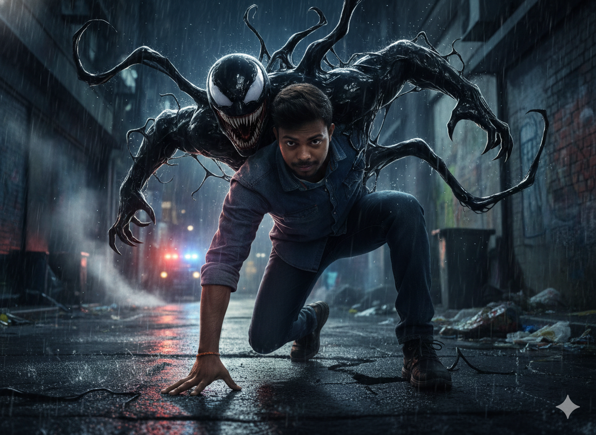
16K Ultra-Realistic Cinematic Movie Scene of the same young man - keep his real facial features and proportions exactly as in the reference photo (do not change or edit his face). He is now in a dynamic action pose, slightly crouched forward as if about to leap or attack, one knee bent and one hand pressed against the ground with the other hand reaching out. From his back, the Venom-like symbiote bursts outward, forming large
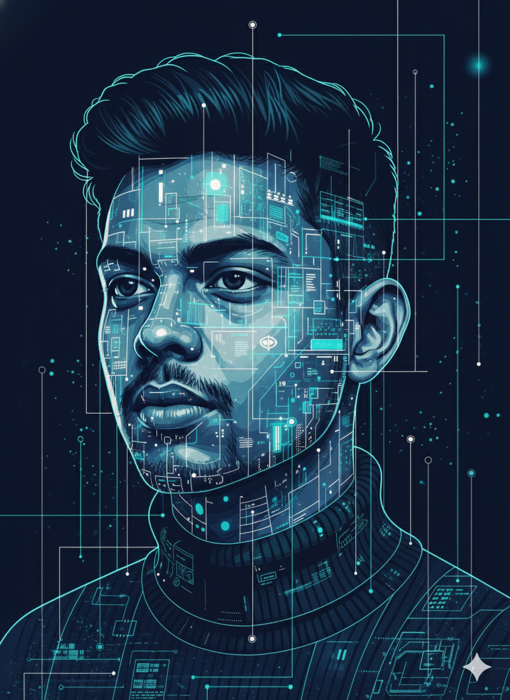
1/2 This ultra-detailed stylized portrait captures a futuristic, intellectual vibe through a modernist illustration style inspired by architectural blueprints and editorial line art. The composition features a face split into layered geometric sections, meticulously embedded with technical diagrams, structural grids, and city interiors within the facial planes
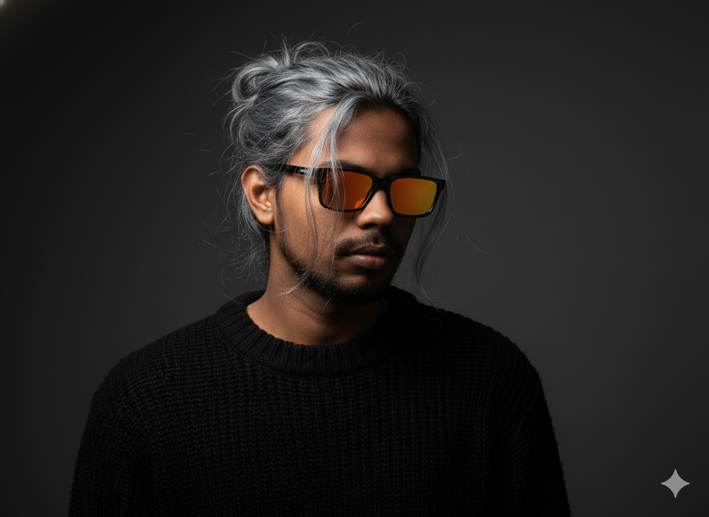
Artistic fashion portrait of a young boy (use the referal image ,which i upload ) in a thick knit black sweater with thick textured yarn He has long ash grey hair tied in the massy bun and some falling across to the face, He was framed in dramatic side-lighting narrow sunlight cutting through her face to create a striking chiaroscuro effect The overall ambient background is minimalist somber and elegant rectangular Orange reflective sunglass. reminiscent of high-fashion editorial photograph face don't change
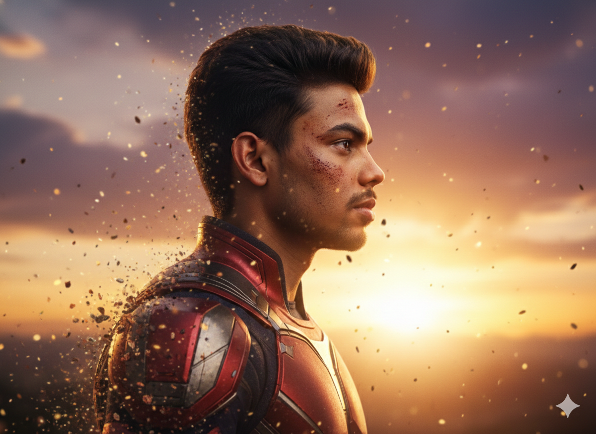
Use 100% face from the uploaded reference photo. Strongly preserve identity: facial structure, skin tone, jawline, nose, lips, eyes, and hairstyle must match the reference exactly A dramatic cinematic portrait of a young superhero standing in profile at sunset, golden-hour sky glowing behind him. His red-and-black armored suit is partially disintegrating into dust and glowing particles, drifting into the air as if caught in slow motion. Dirt, scratches, and battle damage on his face and suit, conveying sacrifice and resilience. Emotional, intense expression with soft rim light outlining his hair and jawline.
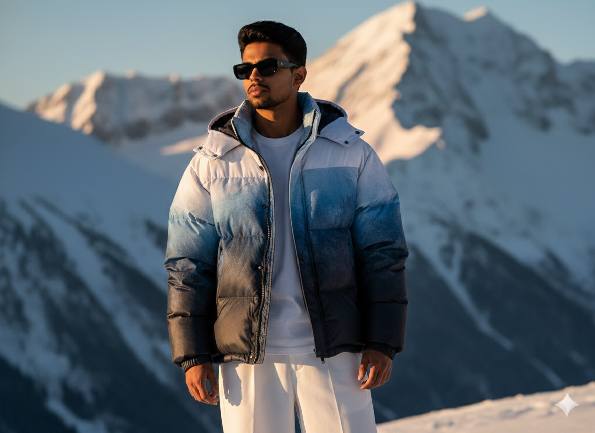
Use 100% face above uploaded photo Photorealistic fashion portrait of a handsome young Middle Eastern man with black hair, black beard, wearing dark rectangular sunglasses, serious confident expression, standing in dramatic snowy mountain landscape with huge rugged snow-covered peaks in the background, golden hour sunlight, cold blue tones, wearing oversized puffer jacket with abstract gradient pattern from dark gray to light blue to white like snowy mountains print all over, shiny nylon texture, high collar, zipped up, white plain t-shirt underneath, loose wide-leg white trousers, full body shot, cinematic lighting, high detail, 8k, professional fashion photography, editorial style, instagram viral aesthetic, shot on Canon EOS R5, 85mm lens, shallow depth of field
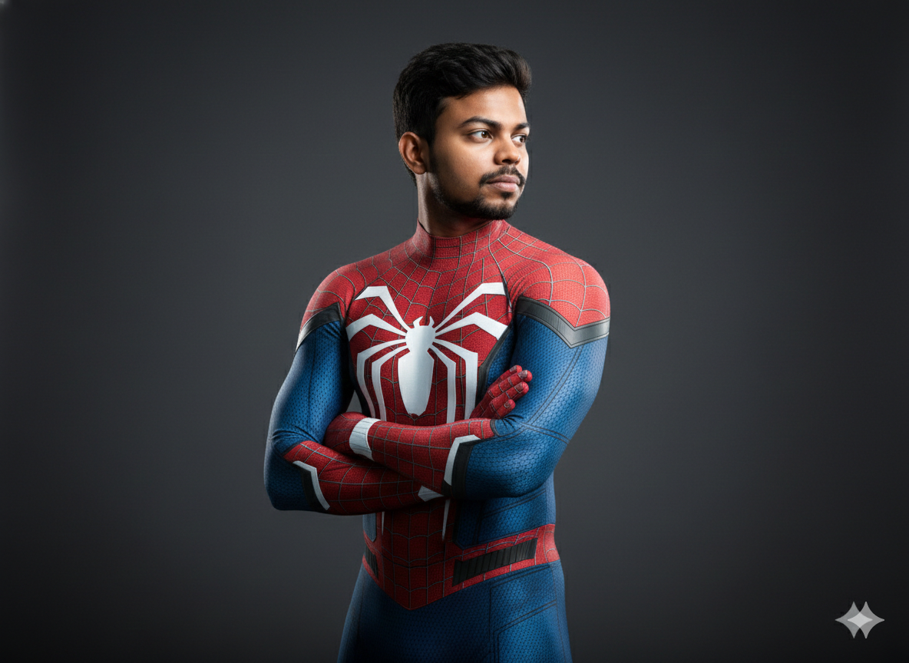
Use my uploaded photo as the exact face reference. Replace only the face with my facial features while keeping everything else the same. Preserve my facial structure, skin tone, jawline, eyes, nose, lips, hairstyle, and expression accurately.
Create a full-body, studio-quality cinematic portrait of a man wearing a tight, red-and-blue spider-themed superhero suit with a detailed textured pattern, raised webbing design, and a white spider emblem on the chest. The suit is sleek, modern, and highly detailed, form-fitting and athletic.
The subject stands confidently with arms crossed over the chest, body slightly angled, head turned slightly to the side, calm and heroic expression.
Professional studio lighting with soft shadows and subtle highlights emphasizing the suit’s texture and muscle definition. Clean, dark gray gradient background with a minimalist, cinematic look.
Ultra-realistic rendering, high detail, sharp focus, editorial superhero portrait, dramatic but clean composition, premium cinematic quality.
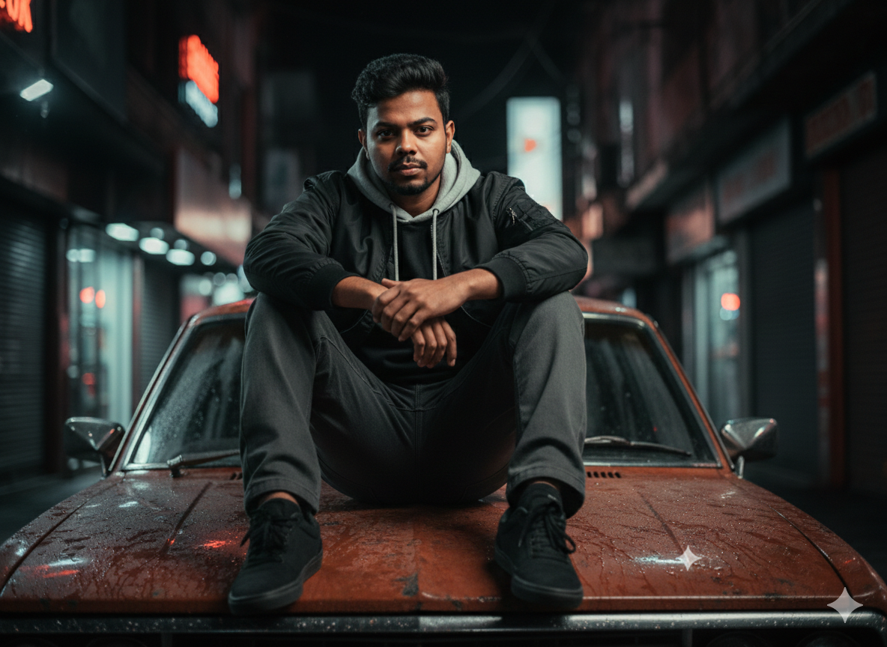
{
"description": "A low-angle, full-body cinematic portrait.",
"subject": {
"description": "A young men (face identical to the reference photo).",
"position": "Sitting directly on the hood of an old, rusty car.",
"gaze": "Gazes directly into the camera.",
"expression": "Serious, intense expression.",
"hands": "Rest on his knees or are clasped loosely in his lap.",
"legs": "Slightly apart, with his feet visible on the damp, oxidized surface of the car hood, above the windshield wipers."
},
"attire": {
"style": "Dark, monochromatic street style.",
"jacket": "A black or charcoal zip-up or bomber jacket.",
"layering": "Layered over a light gray hoodie, the collar subtly visible beneath the jacket.",
"trousers": "Loose-fitting dark gray trousers.",
"footwear": "Dark sneakers."
},
"composition": {
"shot_type": "Low-angle, full-body.",
"perspective": "Shot from a low perspective that makes the viewer look up at him.",
"framing":
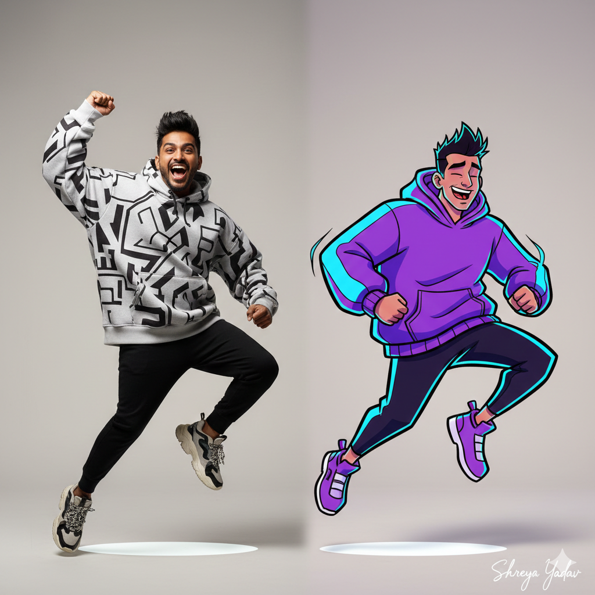
{
"description": "A low-angle, full-body cinematic portrait.",
"subject": {
"description": "A young woman (face identical to the reference photo).",
"position": "Sitting directly on the hood of an old, rusty car.",
"gaze": "Gazes directly into the camera.",
"expression": "Serious, intense expression.",
"hands": "Rest on his knees or are clasped loosely in his lap.",
"legs": "Slightly apart, with his feet visible on the damp, oxidized surface of the car hood, above the windshield wipers."
},
"attire": {
"style": "Dark, monochromatic street style.",
"jacket": "A black or charcoal zip-up or bomber jacket.",
"layering": "Layered over a light gray hoodie, the collar subtly visible beneath the jacket.",
"trousers": "Loose-fitting dark gray trousers.",
"footwear": "Dark sneakers."
},
"composition": {
"shot_type": "Low-angle, full-body.",
"perspective": "Shot from a low perspective that makes the viewer look up at him.",
"framing":
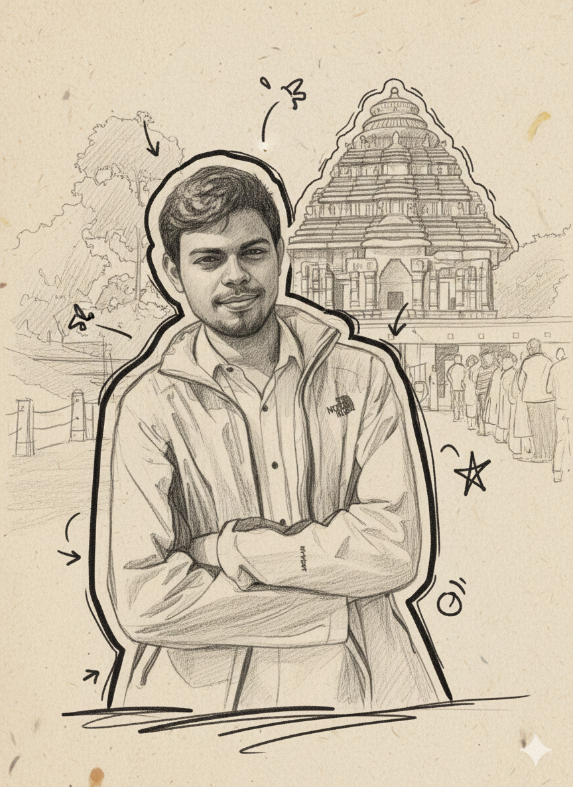
A creative AI drawing of the uploaded photo, blending pencil sketch details with notebook doodle outlines. Paper texture background, pen strokes combined with graphite shading, making the portrait look both realistic and hand-drawn in a sketchbook.
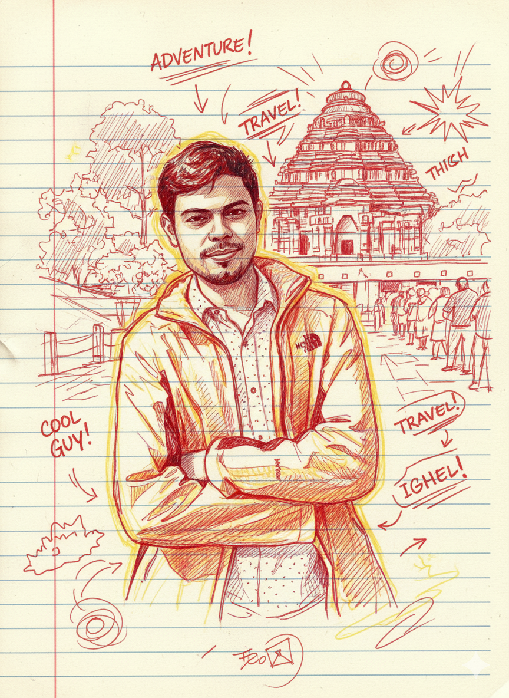
Use my uploaded image. Generate a hand-drawn portrait illustration in red and yellow pen on notebook paper, inspired by doodle art and comic annotations. Keep full likeness of the subject, expressive lines, spontaneous gestures, bold outline glow, handwritten notes around, realistic pen stroke texture, 4K resolution.
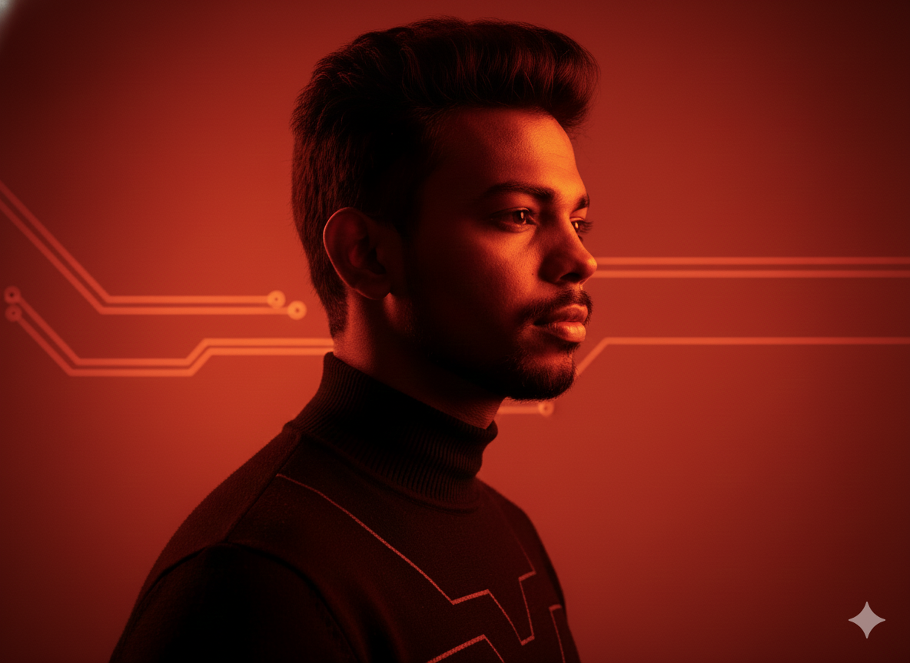
create a futuristic portrait of a person , side profile view, minimal composition, monochromatic red-orange color palette, dramatic studio lighting, smooth skin tones, wearing a black high-neck sweater, cyberpunk and tech-inspired aesthetic, soft shadows, high contrast, premium product photography style, ultra realistic, sharp focus, modern futuristic mood image using my face which i upload
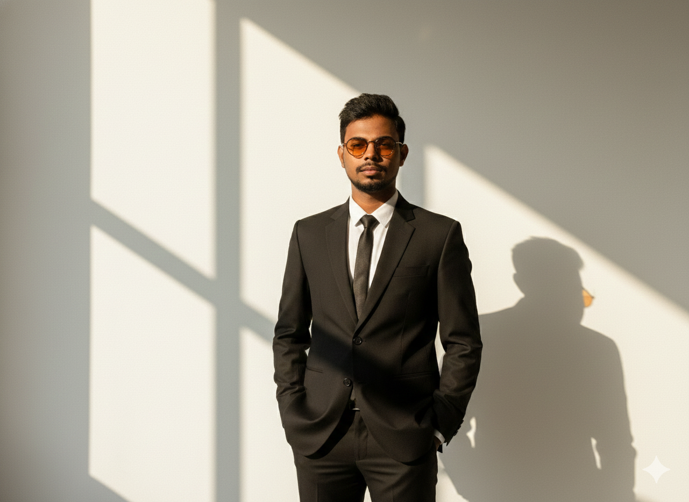
create a Cinematic portrait of a young man standing confidently against a minimal wall, wearing a classic black suit, white shirt, and black tie, hands in pockets, stylish amber-tinted glasses, sharp jawline, well-groomed hair, dramatic natural sunlight coming from the side creating strong geometric shadows on the wall, warm golden color tones, moody atmosphere, editorial fashion photography, soft film grain, high contrast lighting, elegant and modern aesthetic, shallow depth of field, ultra sharp focus image use my face
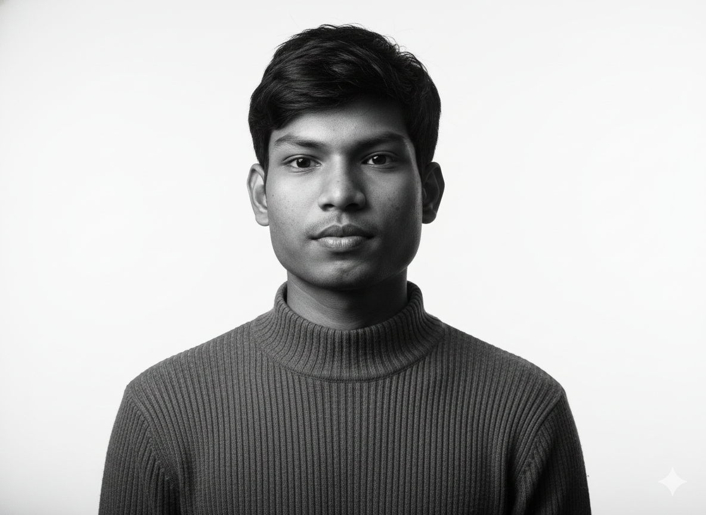
create aMinimalist black and white side profile portrait of a young person facing front side , clean white background, soft natural lighting, sharp facial features, detailed hair texture, wearing a high-neck ribbed sweater, editorial fashion photography style, calm and thoughtful expression, high contrast, ultra sharp focus, modern aesthetic, studio photography image using my face
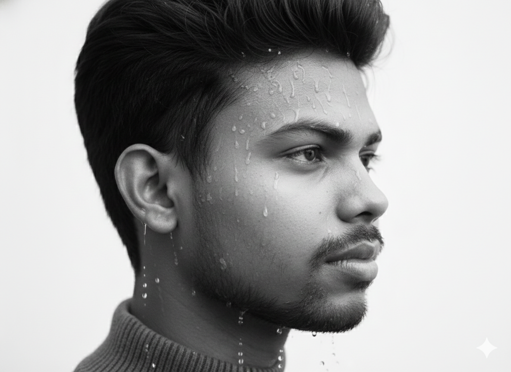
create a 4k realistic image Close-up shot of a person's face with wet skin and water droplets, emphasizing texture and detail. using my face (use my referal image )
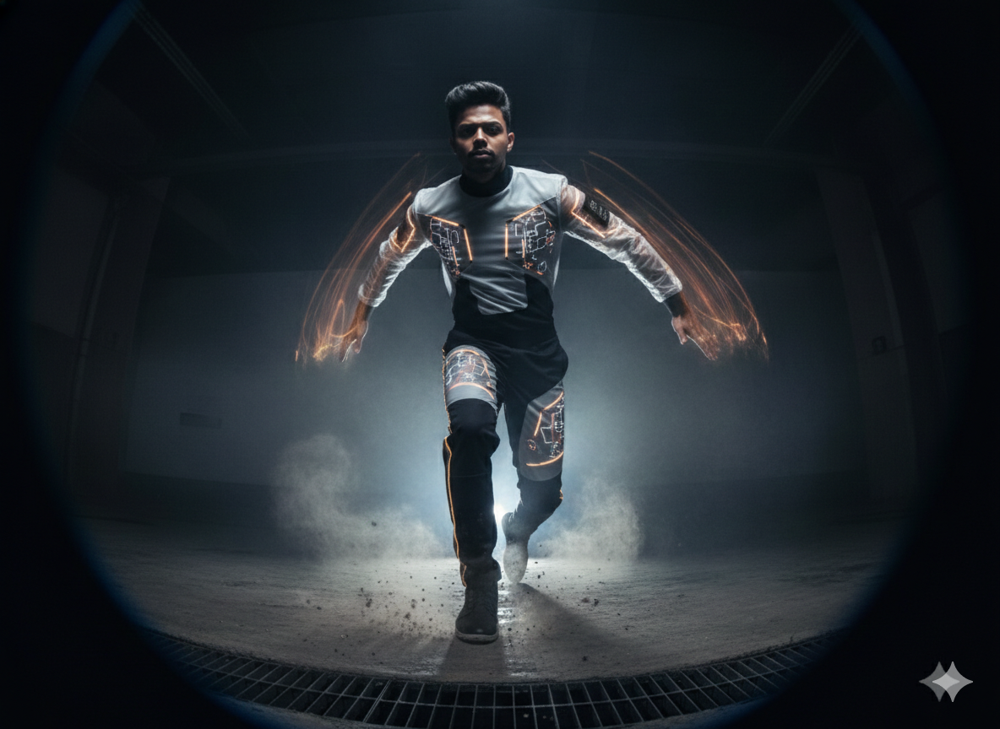
a dark edgy space, man with super technical apparent sprints at the camera, motion blur trailing his movements elegantly. His movement is dramatic and expressive. His clothing has plays of transparency and lightness. long exposure, his movements seemingly trailing behind him. dust and haze flicking up around him. Dramatic perspective. fisheye lens create this image with my face (use my photo as a referal )
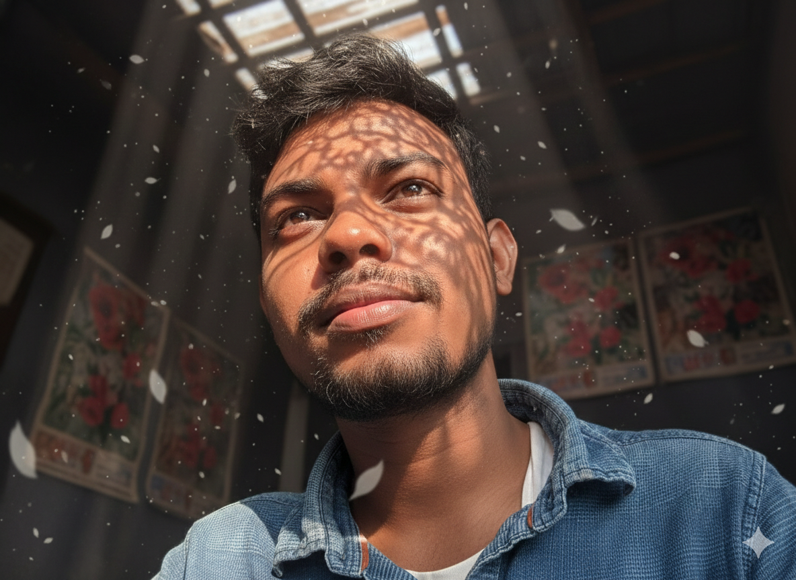
Use 100% face from the uploaded reference photo. Strongly preserve identity: facial structure, skin tone, jawline, nose, lips, eyes, and hairstyle must match the reference exactly. A high-fidelity digital art style, low-angle close-up of an individual with head tilted back in a serene pose. Dramatic dappled sunlight filters through an unseen lattice casting intricate, warm light patterns and deep shadows across the face and a textured button-down shirt worn over a tee. The background is a dark, moody room with blurred floral posters. Ethereal, glowing petals and soft light particles float in the air. Cinematic lighting
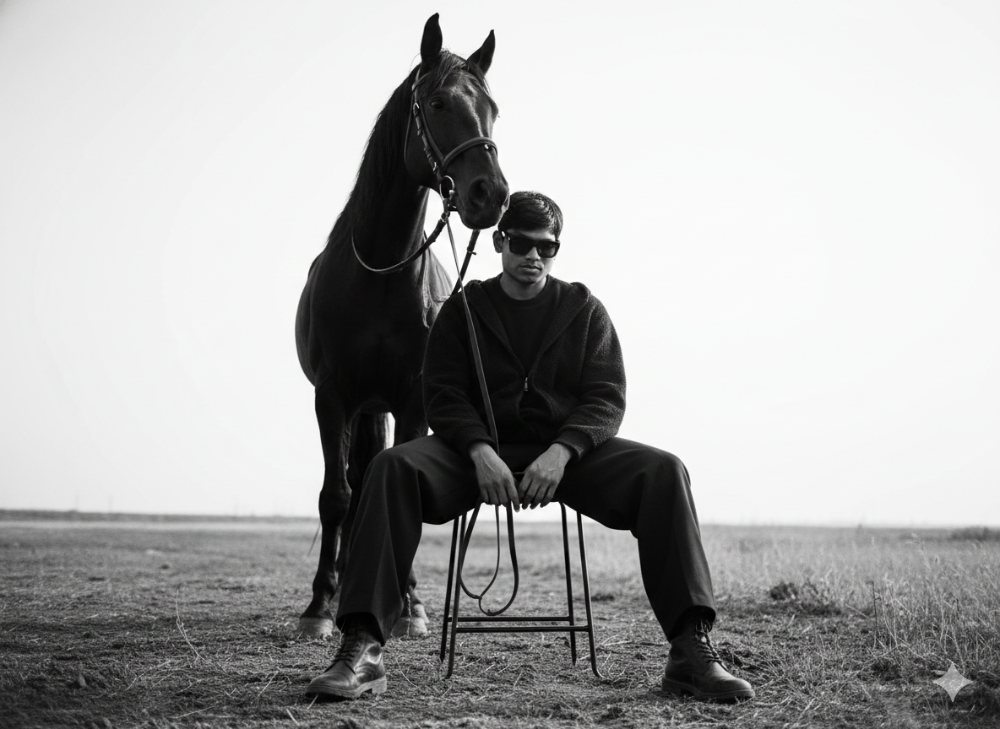
Photograph me sitting low on a minimalist metal
stool, legs spread forward in a relaxed, grounded
pose, feet planted on uneven outdoor terrain. One
hand loosely resting between the knees holding thin
leather reins, shoulders slightly slouched, head tilted
downward in a calm, introspective expression.
The subject wears dark oversized layered clothing,
wide-leg trousers, leather boots, and dark
sunglasses. A strong black horse stands closely
behind the seated figure, aligned protectively and
partially overlapping the subject's silhouette.
Open natural landscape with rough ground and wild
grass, bright overexposed sky creating strong
negative space. High contrast lighting, deep blacks,
soft highlights, matte texture.
Timeless, cinematic mood.
Medium-format film look, subtle grain, monochrome
fine-art fashion editorial, avant-garde luxury
photography. don't harm the quality of the picture
give me in 1080p quality:
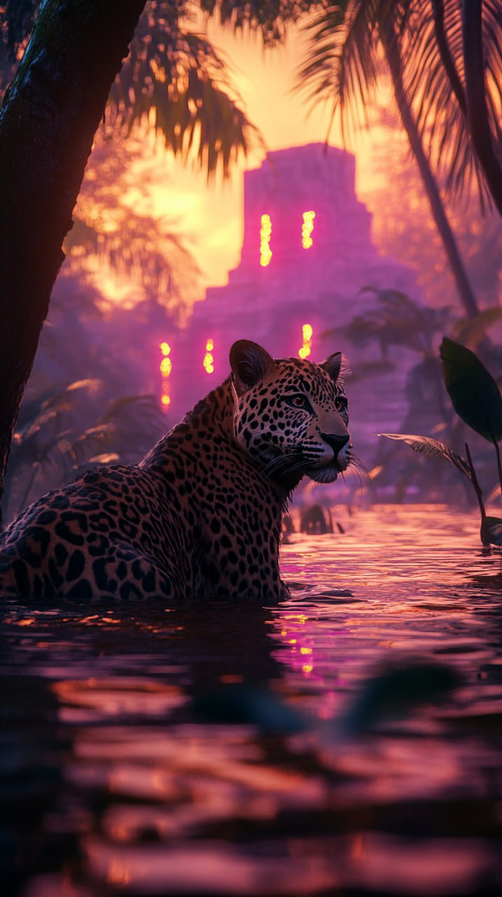
leopard sitting in a swamp, low ground-level perspective macro close up through tropical jungle swamp, camera half submerged under water, ancient ruins with glowing magic runes engraved in the distance, dreamy cinematic lighting, purple pink orange sunset, dusk, low lying mist, surreal atmosphere, high realism, photorealistic,
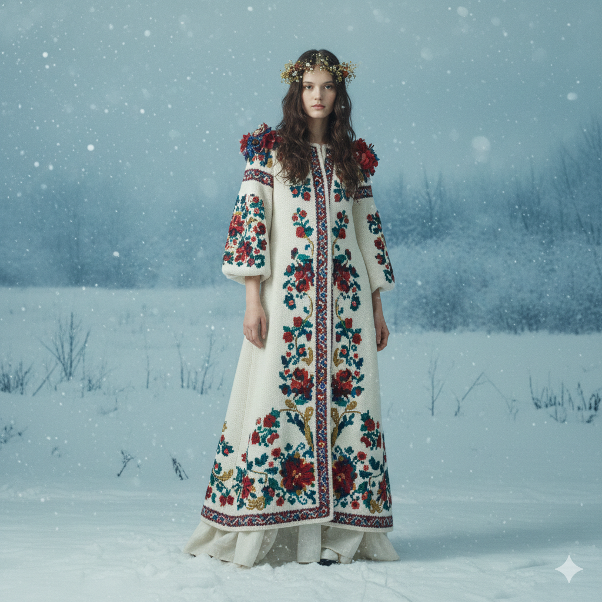
Use 100% face from the uploaded reference photo. Strongly preserve identity: facial structure, skin tone, jawline, nose, lips, eyes, and hairstyle must match the reference exactly. editorial fashion photo, full body shot, female model dressed in long white handmade knitted coat with Ukrainian embroidery and couture decorations, winter landscape, national geographic photo, depth of field, fashion and style, Ukrainian embroidery, bold color, Woman has realistic face with visible little pores, small imperfections and wrinkles. She has absolutely realistic face.
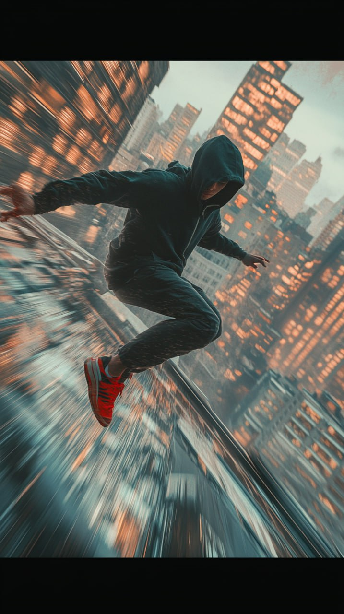
Anime style, side view tracking shot, high velocity. A Parkour runner running at supersonic speed across rooftops. Heavy motion blur on the background city. Smear frames on the legs. Dynamic camera shaking slightly. Wind distortion on clothes. Speed lines radiating from the edges. Sakuga animation style
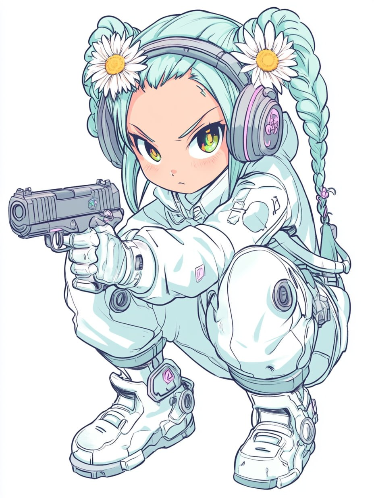
Use 100% face from the uploaded reference photo. Strongly preserve identity: facial structure, skin tone, jawline, nose, lips, eyes, and hairstyle must match the reference exactly. Front-facing centered composition of a chibi-style cyber fantasy girl crouching and holding a small pistol, mint-colored twin braided hair with tiny horns, large expressive eyes, wearing a white futuristic techwear jacket with mechanical details and cables. Floral headset with daisy decorations, soft pastel color palette, clean white background. Kawaii pastel color palette, bold neon outlines, high-quality cute cartoon illustration, Y2K harajuku-inspired style
This photo is incredibly realistic. It's like something out of a Pixar movie. It's 3D. It's a colorful scene, dvd screenshot from a studio ghibli movie, an old japanese train on tracks in the ocean,
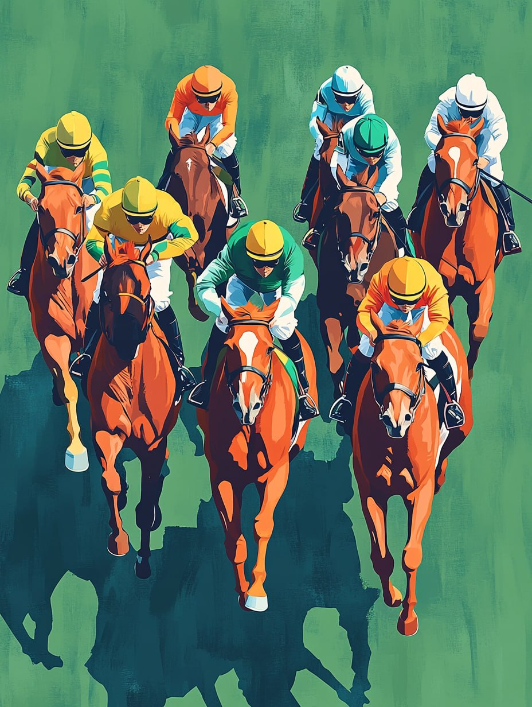
a group of horse jockeys racing on horses, in the style of henri matisse and vincent van gogh, oil painting, with a green background, from a top-down high angle, featuring minimalism, a flat illustration, geometric shapes, a cartoon style, bright colors, simple lines, brush strokes, natural lighting, and a vibrant and lively atmosphere.

abstract ocean, graceful whale tail in air, luminous gold moon, planets, monochromatic metallic palette, atmospheric depth, gallery-quality aluminum print, high contrast, museum-grade composition, abstract fine art, professional lighting, ultra-sharp detail, high-resolution, crisp focus, deep shadows, spectacular highlights,

Use 100% face from the uploaded reference photo. Strongly preserve identity: facial structure, skin tone, jawline, nose, lips, eyes, and hairstyle must match the reference exactly. a highly detailed digital illustration of a woman in her twenties with short black bob hair and a horse gently leaning close to each other in a mystical forest, surrounded by a sparkling black and gold world, shimmering golden particles in the air, elegant and magical atmosphere, ultra high resolution, sharp focus, intricate details, fantasy digital art, dramatic lighting

The simple background, the outline and posture of the horse are full of imagination, creating a strong visual impact, giving people a strong sense of movement and power. The overall style is simple yet highly expressive, combining Chinese ink wash painting with modern formality, minimalist, with the traces of woodcut and printmaking, strong in painting sense, mainly used for New Year pictures, representing auspiciousness

A top-down view of a clear koi pond with three or four koi fish swimming gracefully, surrounded by one or two lily pads of different sizes strategically placed to enhance the composition, gentle water ripples adding a sense of movement, the water is transparent and slightly reflective with a soft shine, dominant colors are white and pale water green, the tones are soothing and calm, the overall aesthetic is a mix between realism and watercolor painting, designed as a cover image, shot with a Canon EOS R5, 35mm f/1.8 lens, soft pastel color palette

Surreal medieval battlefield, year 1014, London Bridge spanning the Thames, ancient wooden bridge structures partially collapsing, Norman-era London in the background with timber houses and smoke-filled sky, English Saxon warriors clashing with Nordic Viking invaders, round shields and longships pressing against the riverbanks, banners whipping in supernatural wind, ravens circling overhead, ghostly Norse runes glowing faintly in the mist, water reflecting fire and steel like a dream, exaggerated scale and perspective, mythic atmosphere, cinematic lighting, dramatic clouds swirling unnaturally, painterly realism mixed with surreal fantasy, epic historical tableau, ultra-detailed, moody color palette, volumetric fog, motion blur on warriors, high contrast shadows, 8k fantasy art, artstation

A Chinese style artwork with green as the main color tone, depicting a scene of a group of white cranes flying over green waters in the far camera. Several small white cranes presented different flying postures, forming a natural and orderly layout. The posture is light and elegant, showcasing the dynamic of flight. The background is a green water area of varying depths, with some texture, which increases the layering and depth of the picture. Green gradually transitions from light green to dark green, forming a rich color variation.

Polish countryside at sunset, wide frontal view, an old traditional wooden cottage in classic rural Polish style, slightly worn but charming, surrounded by a field full of red poppies gently swaying in the wind. Warm golden sunset light, the sun visible in the upper right corner of the sky, casting long soft shadows across the field. Peaceful rural atmosphere, nostalgic summer evening, subtle haze in the air, cinematic lighting, ultra realistic, high detail, natural colors, no people, idyllic and magical mood, shallow depth of field, 85mm photography style, 8k, cinematic realism

Use my uploaded face image as the face reference. Strongly preserve identity: facial structure, skin tone, jawline, nose, lips, eyes, and hairstyle must match the reference exactly. Ultra realistic RAW cinematic photo of a 30-year-old woman , riding a white horse in a dense red poppy field. Natural skin with pores, micro-texture, light sheen on T-zone, subtle freckles. Composition: eye-level 3/4 view, subject centered, gentle wind moving her hair. Lighting: soft daylight, slightly diffused, 5400K, natural shadows. Optics: 50mm lens, f/2.2, shallow but realistic DOF, full-frame sensor look. Materials: realistic horse fur texture, matte white coat, detailed poppy petals with translucency. Background with soft countryside depth. Post-processing: filmic S-curve, fine film grain, clean whites, no oversharpening.

Use my uploaded face image as the face reference. Strongly preserve identity: facial structure, skin tone, jawline, nose, lips, eyes, and hairstyle must match the reference exactly. Airy fashion portrait, oil painting style, soft focus photography, front view, perfectly symmetrical face, centered composition, young woman facing the camera, large white butterfly perfectly positioned on the bridge of her nose, covering her eyes with its wings, monochrome white color scheme, milky and alabaster tones, platinum hair, crimson lips, soft diffused light, elegance, romantic, fine brushwork, realistic yet painterly, high detail, 8k resolution, symmetrical framing, absolutely no other colors except the bright red lips

A cute, happy cheetah wearing pink sunglasses and a soft fur coat, holding a coffee cup with its paws, against a pastel-colored background. Studio photography, the work of an award-winning photographer, with high-definition details

Ultra-detailed macro shot of a mosquito flying mid-air, wings frozen in high-speed motion, shimmering translucent wings, extreme close-up focus on eyes, soft bokeh background, surreal purple ambient glow, photorealistic textures, sharp micro-details, cinematic lighting, depth-of-field blur, high-speed photography style,

Use my uploaded face image as the face reference. Strongly preserve identity: facial structure, skin tone, jawline, nose, lips, eyes, and hairstyle must match the reference exactly. a full portrait of a young Victorian lady sitting at her bureau in her classical style Office, writing. She are dressed in a simple luxurious, detailed 19th-century design modest, similar to steampunk style. The scene is Very detailed. (action) The lady is writing a letter . The setting is an elegant, vintage classical with antique decor and warm lighting at Christmas, bold colors

A woman nordic walking solemnly beside a colossal ice dragon. The woman wears a primitive armor made of dark leather and thick white fur on her shoulders and arms. Her hair is tightly braided in multiple cornrows, dusted with snow. Her expression is focused and determined, gaze lowered, with cold breath misting in the frozen air. Her outfit emphasizes resilience: leather bracers, utility belt, and fur boots. Behind her, the dragon looms enormous, covered in translucent blue scales resembling ice. Its eyes glow with an icy light, while frosty vapor escapes its nostrils, hinting at blue fire within. Its texture is richly detailed: crystalline horns, massive scale plates, sharp ridges along its neck. A snowstorm swirls around them, heightening the dramatic atmosphere. The setting is a frozen, misty landscape with cold diffused lighting illuminating the dragon’s contours and the warrior’s furs. Ultra-detailed, hyperrealistic, sharp focus, 8K, epic, mystical, fantasy cinematic rendering.

A dazzling school of tropical fish swimming gracefully through a vibrant coral reef in ultra-realistic 8K resolution. Their vivid colors shimmer in the filtered sunlight as they weave through intricate coral structures. Among them, several clownfish (Amphiprioninae) playfully dart between anemones. The underwater scene is rich in detail, with lifelike textures, soft light rays piercing the clear blue water, and a magical, peaceful atmosphere.

detailed pencil drawing of a jellyfish with alien geometry, on a white background with notes and diagrams, in the style of albrecht dürer, ink on paper, rendered with octane

Use my uploaded face image as the face reference. Strongly preserve identity: facial structure, skin tone, jawline, nose, lips, eyes, and hairstyle must match the reference exactly. An origami-style combat scene from John Wick, where the origami Keanu Reeves, wielding a samurai sword in one hand and a pistol in the other, engages in a battle with a group of assassins. Camera quickly pulls out and frantically orbits around the scene, showing other assassins around him getting sliced into pieces. The ground shatters into pieces from impact, and the scene gets more chaotic as the shattered pieces zoom past the camera

holographic HUD showing a cat illustration being drawn stroke by stroke, glowing line art forming gradually, clean minimal VFX interface, flat translucent graphic style, dark background, no text

Close-up of Eve’s hand only reaching toward a ripe rosy apple on a branch to pluck it, no face or body visible; framed by dewy apple blossoms and lush leaves with tiny water droplets; pastel blush pink palette, creamy tones, pearlescent highlights; soft volumetric low-contrast light with gentle rose-gold rim glow on skin and fruit; textures emphasized: silky micro-fur, downy, plush, touchable on petals, mossy twig and leaf undersides; shallow depth, creamy bokeh, dreamy painterly haze, photorealistic fantasy, ultra-detailed, cinematic soft bloom

Use my uploaded image as the face reference. Strongly preserve identity: facial structure, skin tone, jawline, nose, lips, eyes, and hairstyle must match the reference exactly. Close-up of Eve’s hand only reaching toward a ripe rosy apple on a branch to pluck it, no face or body visible; framed by dewy apple blossoms and lush leaves with tiny water droplets; pastel blush pink palette, creamy tones, pearlescent highlights; soft volumetric low-contrast light with gentle rose-gold rim glow on skin and fruit; textures emphasized: silky micro-fur, downy, plush, touchable on petals, mossy twig and leaf undersides; shallow depth, creamy bokeh, dreamy painterly haze, photorealistic fantasy, ultra-detailed, cinematic soft bloom

Use my uploaded image as the face reference. Strongly preserve identity: facial structure, skin tone, jawline, nose, lips, eyes, and hairstyle must match the reference exactly. A very beautiful girl standing beside a graceful horse in a serene landscape, very beautiful face, very beautiful eyes, minimalistic and elegant style, soft lighting, flowing hair and smooth fur texture, subtle pastel color palette, gentle sky or soft gradient background, high resolution, wallpaper, peaceful and calm atmosphere, focus on girl and horse, realistic yet artistic

a small whale and human with a baby whale whale that swims in the univers dreamy glitter glamour sweet fairytale full of light codes full light gold pastels light language symbols very detailed alian-like

a cinematic close-up of a cat walking slowly toward the camera on a dark reflective floor, the entire body made of solid polished pure gold, glowing warmly with soft golden light reflections, metallic surface with smooth sculpted details, no fur, no texture, perfectly reflective gold material, realistic eyes, nose, mouth, and whiskers seamlessly integrated into the golden body, warm amber eyes with lifelike reflections, luxurious cinematic lighting, masterpiece macro texture, shallow depth of field, front composition

Oil painting of an elderly man and woman sitting at the table in their small flat, drinking tea from glasses with long curved spouts. Next to them is their dog. The room has wooden furniture, a striped rug on the floor, and old oil paintings on the wall. A small window allows light to fall into the room, in the style of Ilya Repin.

Chinoiserie style gouache and real oil painting of a lush bluish dreamy tropical forest under a glowing full moon, soft mist and gentle fog drifting between tall palm trees, graceful deer and elegant giraffes wandering among exotic foliage, playful monkeys swinging on vines, vibrant peacocks with shimmering feathers, ornate botanical motifs and delicate floral patterns, moonlight casting silver-blue highlights, magical and whimsical atmosphere, rich hand-painted textures, ultra-detailed brushstrokes, museum-quality fine art, enchanting and romantic composition

Use my uploaded image as the face reference. Strongly preserve identity: facial structure, skin tone, jawline, nose, lips, eyes, and hairstyle must match the reference exactly. The beautiful woman is wearing a pure white wedding dress paired with skin-toned tights, a three-part composition, in a garden, with a soft blur effect, backlighting, elegantly standing, a sense of purity, white as the main color, romantic.

Chrome Warrior con Espada. Guerrero cromado sobre caballo (de nubes) con espada y con la estela de movimiento. el caballo sobre las dos Patas traseras, las dos delanteras están en el aire porque el caballo esta encabritando, relinchando y el caballero con la espada levantada. la escena tiene dinamismo y movimiento

White albino Bat with pomegranate, dark background, fantasy illustration style, dark white and light red, soft edges and atmospheric effects, surrealistic illustrations, mysterious backdrops, and a touch of vintage charm. The artwork is created by an artist known for its exquisite details and realistic animal portraits.

Use my uploaded image as the face reference. Strongly preserve identity: facial structure, skin tone, jawline, nose, lips, eyes, and hairstyle must match the reference exactly. A high-fashion runway scene featuring a graceful female model walking confidently toward the camera, wearing a long, flowy evening gown. The gown's fabric is adorned with intricate blue and white patterns inspired by traditional Indian ceramic tiles--delicate floral and geometric motifs in rich cobalt and ivory tones. The dress moves elegantly with her stride, catching ambient light. The setting is a spacious, luxurious all-white mansion with grand arches, high ceilings, and marble floors, creating a striking contrast to the gown's detailed print. The lighting is soft yet glamorous, enhancing the elegance of both the model and the gown.

A man with an extremely thin face, wearing white robes and red glowing symbols on his forehead, shrouded in mist, with a symmetrical composition, a symmetrical a movie-like texture, and a futuristic sci-fi style, in the style of a science fiction artist.

a realistic red octopus trapped inside a narrow vertical maze shaft, extremely tight space, walls pressing in from all sides, maze is tall, white, claustrophobic, viewed from below looking up, octopus stuck and struggling to climb, high detail, cinematic lighting

Use my uploaded image as the face reference. Strongly preserve identity: facial structure, skin tone, jawline, nose, lips, eyes, and hairstyle must match the reference exactly. A queen of hearts playing card in the style of hyper-realistic pop art, featuring dark gray and red tones, tattoo-inspired illustrations, a symmetrical design, and ultra-detailed elements, including other playing cards, in the style of Michael Garmash. The portrait depicts a woman wearing a crown, with high contrast.

watercolor of fat cowboy dog on watercolor paper, fat doggo, watercolor paper texture, slightly runny, beautiful

a giant sci fi futuristic dystopia mech standing in the middle of desert, the mech is futuristic like the mech from movie Oblivion, the mech is wearing the North Face brand protective puffer protections, and a yellow and black color poncho, the mech is inspired by the M1 Abram tank, with tank features, the mech is carrying 2 small red fuel tanks on it's back, the robot is a little weathered but still new, full body shot, in the style of teenage engineering.

Showa era, bustling street corner with a retro streetcar running, old-fashioned shops and signs, vibrant town atmosphere, nostalgic, film grain, 8mm film style, realistic anime style with detailed background, soft natural lighting, reminiscent of Makoto Shinkai's art

A rabbit-like tall creatures looks towards the camera. One hand on his hip and the other over the katana. In the style of a digital painting, 80s style, stylized realism, anime-inspired, manga influence, soft brushstrokes, vibrant color palette, cinematic lighting, sharp linework

A proud, surreal white gorilla standing defiantly among a dense sea of black gorillas, dramatic contrast, glowing intense eyes, and a wide, confident grin flashing a shining golden tooth. The scene is drenched in psychedelic hues: neon purples, electric blues, radiant oranges, and shimmering greens blending into the fur. The black gorillas melt into a swirling background of surreal patterns, fractal textures, and hallucinogenic waves. The white gorilla radiates with an aura of vibrant energy, like a beacon of individuality and power within a hypnotic, dreamlike jungle. Hyper-detailed, psychedelic surrealism, trippy visionary art, saturated neon colors, glowing outlines, bold textures.

a poised greyhound dog, fur entirely pink, dressed in a tailored pink herringbone blazer over a mustard-yellow knit sweater, standing against a seamless pink backdrop, high-fashion editorial portrait, hyperrealistic detail in fur and fabric textures, studio lighting with soft shadows, centered composition, subtle film grain --s 750.0

A Persian cat, with blues colors,fine fur, vivid demeanor,animal photography,8K

General Radahn, close-up, preparing to unleash devastation, riding Leonard, true to Elden Ring's aesthetic, PlayStation 1 graphics, 32-bit pixel art, deep within Caelid with a malevolent red and fiery orange aura, gritty pixel textures on his armor and the desolate landscape, both of his twin greatswords ready

Side view, photograph of an angry pink leopard with a floral pattern on its fur roaring in the air, close-up portrait, solid white background, pastel colors, photorealistic, hyperrealism, Octane render, in the style of Hedi Xandt.

A still from the movie, with a grainy, low-contrast quality. A cute little girl next to her black panther , panther has a serious look and is ready protecting the girl. The scene is set in ancient China, with a snowy landscape and a dimly lit, Foggy,close-up shot of the face-to-face interaction between the little girl and the animal ,high-end, Realistic Photography, 16K

A photorealistic studio portrait of a goat wearing a stylish red suit with a matching red shirt and black sunglasses, posing with its back to the camera in a three-quarter back view, over-the-shoulder pose, head slightly turned so part of the face and one eye are visible, well-groomed white wool, soft studio lighting, high detail, sharp focus, dramatic shadows, against a vibrant solid yellow background. Bright and clean composition, fashion editorial style, Canon DSLR, 8K, ultra-realistic photography. No cartoon, no illustration, no painting, no drawing, no CGI, no 3D render--only true-to-life photography.

Warhammer 40000 male primaris space marine captain with short black hair, striding across battlefield, wearing dark silver metallic and bronze samurai inspired power armour, dark red cloak trailing like smoke

Use my uploaded face image as the sole face reference. Lock identity with maximum accuracy. The generated face must precisely match the reference: facial structure, skin tone, jawline, cheekbones, nose shape, lips, eye shape, and hairstyle. Do not change ethnicity, age, or facial proportions. No face swapping errors, no identity drift.A beautiful Indian girl, photorealistic style, sitting on the floor of her traditional South Indian 'Totti Mane' home. Rainfall is visible behind her through the open courtyard. The environment feels fresh and calm. She looks cute but slightly worried, gazing directly at the camera. She is wearing a simple traditional outfit, with natural makeup and soft lighting highlighting the rainy atmosphere.

Use my uploaded face image as the sole face reference. Lock identity with maximum accuracy. The generated face must precisely match the reference: facial structure, skin tone, jawline, cheekbones, nose shape, lips, eye shape, and hairstyle. Do not change ethnicity, age, or facial proportions. No face swapping errors, no identity drift.A portrait of a female character in a Cleopatra costume. The background is a minimalist desert scene to focus on her face. Realistic cinematic photography, portrait photography, high-definition quality.

blonde, girl,old, in a braid. Full-length image. She is wearing a black, form-fitting dress with an open back. The whole dress is made of lace, the back. The hairstyle is high. She stands with her back to her full height and turns around to face. It's a fantasy, a magic academy, a ball at a magic academy, very stylish and beautiful, Victorian fashion, historical fantasy, historical style. fantasy. High detail, realistic, direct light

Use my uploaded face image as the sole face reference. Lock identity with maximum accuracy. The generated face must precisely match the reference: facial structure, skin tone, jawline, cheekbones, nose shape, lips, eye shape, and hairstyle. Do not change ethnicity, age, or facial proportions. No face swapping errors, no identity drift. A minimalistic Cottagecore-style photoshoot featuring a realistic portrait of a brunnette model , set against a muted background, tim walker style

Use my uploaded face image as the sole face reference. Lock identity with maximum accuracy. The generated face must precisely match the reference: facial structure, skin tone, jawline, cheekbones, nose shape, lips, eye shape, and hairstyle. Do not change ethnicity, age, or facial proportions. No face swapping errors, no identity drift.The AI-GBS commercial design experiment, a portrait of an elegant young jewish man with beard wearing a green velvet suit and a colorful scarf, sitting on a red stool with exotic birds perched around her in the style of Gucci's spring/summer collection for a Vogue magazine editorial. The surrealistic composition features a dark emerald background with flowers and pastel colors, captured through hyper-realistic high-resolution photography by Tim Walker

photo of A close up shot of astronaut suit, the helmet filled with roses, reflecting of the stars. The details of the flowers on it create a sense of mystery. It is located outer space . The composition includes cinematic lighting effects, creating a stunning visual effect. This scene creates a dreamy atmosphere, combining elements of fantasy and reality

a heroic football player ronaldo in a vintage red Liverpool FC kit with Adidas logo, standing beside a glowing red phoenix bird with large wings and radiant feathers, cinematic red neon lighting, dramatic atmosphere, smoky environment, low camera angle, hyper-realistic style, dynamic composition, intense mood, depth of field, detailed textures, studio lighting, photorealistic

A knight in shining armor hugging a cute rabbit in a vibrant flower field, under a clear blue sky, highly detailed, soft lighting, fantasy art style, clean colours

Aerial overhead angle of majestic [Amur leopard] partially submerged in crystal turquoise swimming pool, shot from perfect top-down perspective, immaculate symmetrical composition, slight wide-angle distortion, rainbow spectrum light effects with controlled overexposure, mesmerizing [green] eyes rendered in photorealistic detail, contemporary conceptual photography, arthouse editorial style

Haute couture illustration, illustration art, parrot, parrot and beauty, close-up, fashion magazine cover, top title "RUSSIA", master-level composition, oriental aesthetics, new meticulous painting, mineral color painting, texture matte, Chen Jialing, dark magic, flat illustration, ancient painting portrait, ink painting portrait

hyper realistic high definition photography image of angel woman wearing chrome suit, the suit looks futuristic lights up and studded with silver crystals, shining silver wings, long silver glistening gothic looking sword stuck in the ground in striking style, tail and thin, long leg, immersed in some kind of fantasy, red background, very low light, each detail in high definition, full body shot, upward view, 8k, hyper-detailed,

full-length robot woman, haute couture garment made of gold filigree, cutout design, delicate lace pattern, intricate details, metallic feathers, in an ancient korean style, with exquisite details, chowboy shot, biomimicry, metallic particles, surreal, clam, classic, details, wide shot, cinematic quality, fashionable, and artistic, capturing blend of strength and elegance, 8k, hyper-detailed,

Use my uploaded face image as the sole face reference. Lock identity with maximum accuracy. The generated face must precisely match the reference: facial structure, skin tone, jawline, cheekbones, nose shape, lips, eye shape, and hairstyle. Do not change ethnicity, age, or facial proportions. No face swapping errors, no identity drift. a female model sitting confidently on stool, wearing stylish suit with blazer draped casually off one shoulder. she has long, flowing dark hair and direct, intense gaze. the setting is in black and white with dramatic, soft studio lighting that adds depth and shadow, creating an elegant and sophisticated atmosphere. the model’s pose is relaxed yet powerful, with one arm resting on her knee, exuding an aura of poise and assertiveness. the overall aesthetic is sleek, fashionable, and artistic, capturing blend of strength and elegance, 8k, hyper-detailed,

foxy: 3d chibi-style firefox with plush white and brown fur, oversized sparkling eyes, tiny rounded paws, and fluffy curled tail. adorably exaggerated proportions with small round face, short legs, and ultra-smooth fur. soft, huggable, high-quality cartoon rendering. firefly: disappearing into the distance, joining others in the glowing night. background: dreamy, star-filled sky with fireflies twinkling like tiny stars. action: foxy purring contently, bathed in the warm light of the fireflies. mode: serene, peaceful, with mystical nighttime glow.

Use my uploaded face image as the sole face reference. Lock identity with maximum accuracy. The generated face must precisely match the reference: facial structure, skin tone, jawline, cheekbones, nose shape, lips, eye shape, and hairstyle. Do not change ethnicity, age, or facial proportions. No face swapping errors, no identity drift. Realistic hdr photo of a majestic giant leopard adorned with elaborate golden armor, standing next to a woman of Slavic appearance with blue eyes and blonde hair, dressed in a traditional Asian fur outfit with flowing fabrics of warm, earthy tones. The scene unfolds against a backdrop of serene mountains under a soft, muted sky, emphasizing the connection between the regal beast and the elegant figure. The atmosphere is saturated with cultural symbolism and mystical enchantment, with a seamless blend of power and beauty

Realistic photo, A stunning magical butterfly emerging from a cocoon, with large iridescent wings reflecting the colors of the rainbow. It gently hovers above glowing flowers in the enchanted forest, surrounded by a magical light. The image is captured with a 50mm lens, highlighting the intricate details of its shimmering wings --stylize 500.0

A serene pastoral scene depicting the young David in an open field, gently playing a harp while watching over his flock of sheep. The golden light of the late afternoon sun bathes the rolling hills, casting a warm glow on the landscape. David, a youthful shepherd with curly hair and simple yet elegant robes, sits on a rock with a peaceful expression, lost in his music. His harp, intricately carved, rests in his hands as delicate notes seem to flow through the air. The sheep graze calmly around him, some resting, others wandering across the lush green pasture. The scene is painted in a classical art style, with soft brushstrokes, warm earthy tones, and a dreamlike atmosphere reminiscent of Renaissance and Baroque pastoral paintings. The composition radiates tranquility, spirituality, and a connection between man, nature, and divine inspiration.

a dark cloaked figure wearing a crown of thorns, holding a baby lamb, under strong dramatic lighting, isolated on a black background

A seamless pattern of white dandelions with green leaves, their petals delicate and fluffy, set against an emerald background, showcasing the intricate details in the style of watercolor. The design incorporates light greens and soft whites, using digital illustration techniques to capture the fine textures on fabric

dramatic, vast landscape, wales, big sky, rolling clouds casting shadows on a sunny day. Big brush strokes, niji 5, style raw

Use my uploaded face image as the sole face reference. Lock identity with maximum accuracy. The generated face must precisely match the reference: facial structure, skin tone, jawline, cheekbones, nose shape, lips, eye shape, and hairstyle. Do not change ethnicity, age, or facial proportions. No face swapping errors, no identity drift. close up of head, cold eyes, black costume, face obscured by fog, low light, a crow next to the girl, surrounded by calla lilies, gray fog covering the sky, mysterious atmosphere, black and white photo

bay owl. blue with red accents. with the letter "T" on the chest, visionary thought provoking HBO national geographic footage

Use my uploaded face image as the sole face reference. Lock identity with maximum accuracy. The generated face must precisely match the reference: facial structure, skin tone, jawline, cheekbones, nose shape, lips, eye shape, and hairstyle. Do not change ethnicity, age, or facial proportions. No face swapping errors, no identity drift. Polaroid effect,2000s photo of a young 20 yo woman,portrait, wear a 2000s retro fashion, chiaroscuro,at the 2000s night --stylize 90.0 --style raw

Minimalist cityscape a deep blue night sky with a glowing red moon overlooking a densely packed hillside town illuminated by warm yellow green and blue lights silhouette of domed and angular rooftops against the darkness subtle palm trees adding an exotic touch soft painterly texture evoking a sense of dreamlike tranquility inspired by modern folk art and contemporary illustration atmospheric composition with a balance of color contrast and negative space

A lioness tenderly nuzzles her cub, their bond of love and strength evident in the close-up shot. The cinematic quality captures every detail with stunning clarity, from the soft fur to the expressive eyes on both faces. This moment exudes an aura of tenderness and beauty as they share a tender moment together, symbolizing the powerful impact of motherhood.

Mighty Morphin lady, pink ranger , in epic scene with, amazing lighting , standing in a fight kung fu pose, full body view, strong physique --stylize 250.0

trans-Neptunian Space Dock Worker & Mechanic, Haute Couture fashion shoot, in the style of golden ratio, avent apocalypse, salvagepunk, rocketpunk, cyberghetto, spaceshipscore, intricate illustrations, energy-filled illustrations, undefined anatomy, trapped emotions depicted

A skeletal queen singing on stage, wearing a white gown and crown with a microphone in hand. Black and white photography, a beautiful dress made of teeth and lace. --chaos 35.0 --stylize 600.0

bay owl. blue with red accents. with the letter "T" on the chest, visionary thought provoking HBO national geographic footage

Close shot of a crane’s upper body formed from glowing dots in translucent gold hues, set against a plain neon pink background, minimal illustration

Use my uploaded image as the primary face reference. Lock identity with maximum accuracy. Facial structure, skin tone, jawline, cheekbones, nose shape, lips, eyes, and hairstyle must precisely match the reference. Do not change ethnicity, age, or facial proportions. Dior campaign style photography, indian bollywood model wearing bespoke saree, desert setting, in the style of editorial photography

A romantic and nostalgic oil painting of a serene countryside scene. A young couple sits on a sunlit meadow covered in wildflowers, reading and enjoying a peaceful afternoon. The woman, dressed in a vintage white dress, focuses on a newspaper, while the man, wearing a dark coat, sketches or writes on paper. A wicker picnic basket rests beside them. In the background, an old European-style house with a tower stands on a hill, partially hidden by lush greenery. The sky is a brilliant blue with soft, fluffy clouds, and a white bird soars high, adding to the dreamy, timeless atmosphere.

Use my uploaded image as the primary face reference. Lock identity with maximum accuracy. Facial structure, skin tone, jawline, cheekbones, nose shape, lips, eyes, and hairstyle must precisely match the reference. Do not change ethnicity, age, or facial proportions. Create an oil painting of a dense magnolia tree in twilight, its white blossoms glowing against the deep blue sky. Amidst the branches, the upper half of a beautiful girl emerges, her serene face framed by cascading hair. She reaches gently for a flower, her expression dreamy and contemplative. Soft evening light highlights her delicate features, blending her presence seamlessly with the ethereal blooms. A towering brick building in the background adds depth and contrast

female majestic doberman with slik face on clean red background, head full of power slightly looking down, angry but strong, not agressive

An astronaut and a giant battle robot run on a glacier, with a huge full moon in the background clean background

Chinese landscape, sunset in the west of mountains and rivers, Chinese-style architecture, small boat on the river surface, ink painting style, red sky, black cliffs, pine trees, Chinese pavilion on the cliff top, distant sun setting behind mountain peaks, reflection on the water surface, warm colors, tranquil atmosphere. High-definition wallpaper.

Use my uploaded image as the primary face reference. Lock identity with maximum accuracy. Facial structure, skin tone, jawline, cheekbones, nose shape, lips, eyes, and hairstyle must precisely match the reference. Do not change ethnicity, age, or facial proportions. Photo of a beautiful ice queen with long hair and pink furry coat and fur hat, cinematic lighting, cinematic photography, high detail, high resolution, hyper realistic, natural colors, natural features, realistic, is posing in front of a snowy landscape. an attractive blonde woman in a pink fur coat and a jeweled hat on her social media profile page, with an attractive blonde woman in pink fur coat and a big crown

A mythical dragon sleeping on a treasure hoard deep in an underground cavern, its shimmering scales reflecting the glow of enchanted gems, with ancient runes carved into the walls, epic scale, dark fantasy, highly detailed environment, cinematic angle

Create a piece integrating baroque inspired floral work with an astronaut as the focal point. Have the flowers organically frame the astronaut and the lighting highlight the astronaut. Have it be hyper detailed and magical surrealism. The lighting should be chiaroscuro

DVD screengrab, 1988 sci-fi film, authentic 35mm film grain, live action julius caesar statue colorings with beautiful views timelessness and the journey to knowledge, Hasselblad H6D-100c, XCD 85mm f/1.8 --chaos 50.0 --style raw --stylize 750.0

Professional realistic photo of a couple in a small boat on a serene lake, surrounded by misty mountains and calm waters reflecting the sky --chaos 100.0 --stylize 750.0

The main character from the Hollow knight game climbing the mountain from the game Celeste using 8bit style --stylize 250.0

A watercolour painting of the historic city of venice, featuring its iconic terracotta rooftops, ancient stone walls, and the shimmering blue Adriatic Sea in the background. Soft, warm colours with a serene and inviting atmosphere. The painting should be centred on the page with a clean white background above and below, leaving space for text. Elegant, artistic, and minimal design suitable for a birthday card.

hyper realistic painting from shoulder height above of a white beautiful woman with large lips. the image size features her whole face. the backround is dark, however the mood is peaceful and quite. A beautiful blue bird covers the woman's two eyes, the rest of her face is visible and so is the backround. the style is made with oil paints.

hyperrealistic hyperdetailed surreal 32k avant-garde modern minimalist,creative and luxurious vogue editorial Photographed from the waist up of avant-garde modern saint laurent high fashion collection.the atypical high fashion model is dressed in saint laurent modern avant-garde high fashion collection,walking in a luxurious vogue runway. luxury modern avant-garde brand editorial,stunning modern avant-garde and minimalist brand visuals.modern avant-garde art direction,minimalism,different perspectives,creative saint laurent editorial,motion in blurr,glowy make-up made by path mcgrath,models from different ethnicities,dynamic dramatic poses,avant-garde dynamic photography,different close-ups,high resolution,hyperrealistic hyperdetailed skin texture and facial features,vibrant color palette,subtle gold details,a model with unconventional beauty,vibrant makeup.motion in blurr,high cheekbones,croocked nose,wide-set eyes,bushy eyebrows, asymmetrical features, sharp jawline,mert&marcus, fine details,dazed and confused magazine,iconic imagery,midaction,32k,dslr,uhd,Photograph by Nick Knight --style raw

realistic photo, beautiful woman, pink astronaut in pink fog standing on Victoria amazonica

Use my uploaded image as the primary face reference. Lock identity with maximum accuracy. Facial structure, skin tone, jawline, cheekbones, nose shape, lips, eyes, and hairstyle must precisely match the reference. Do not change ethnicity, age, or facial proportions. A vibrant young man, around 20 years old, with a relaxed and natural look. Her golden blonde hair is styled in loose waves, complementing her rosy skin and bright green eyes. She wears a pastel blue pajama set with subtle decorative patterns. The setting is a minimalist bedroom, warmly lit with diffused lighting. Photographed with a 50mm lens at f/2.8, her expression is gentle and thoughtfu --style raw --stylize 50.0

Use my uploaded image as the primary face reference. Lock identity with maximum accuracy. Facial structure, skin tone, jawline, cheekbones, nose shape, lips, eyes, and hairstyle must precisely match the reference. Do not change ethnicity, age, or facial proportions.a realistic photo.A blonde boy with beautiful hair against the background of Paris,Eiffel Tower she is wearing a baige sweater.The boy is sitting on a bar stool (chair), with a cup of coffee on the table

Use my uploaded image as the primary face reference. Lock identity with maximum accuracy. Facial structure, skin tone, jawline, cheekbones, nose shape, lips, eyes, and hairstyle must precisely match the reference. Do not change ethnicity, age, or facial proportions. A vibrant young man, around 20 years old, with a relaxed and natural look. Her golden blonde hair is styled in loose waves, complementing her rosy skin and bright green eyes. he setting is a minimalist bedroom, warmly lit with diffused lighting. Photographed with a 50mm lens at f/2.8, her expression is gentle and thoughtfu --style raw --stylize 50.0

realistic,highres,A red poodle with a human body, wearing a tuxedo, gold-rimmed glasses, looking handsome and debonair, donning an aristocratic hat on its head, a golden pocket watch on its chest, holding an English book in its hand, set against the backdrop of a magnificent castle, with an oil painting hanging on the castle wall, in the style of the Renaissance, in the artistic style of Leonardo da Vinci.

a whale in a traditional Japanese art style, like ukiyo-e (woodblock prints). Extreme design, extra detailed, creative, high quality design, white black background and, strong contour, strong color and contrast true white, wide brush, add some creative extra design to it, tokyo style and text, brush art, phone case design style, detailed, creative, unrealistic cartoon style --stylize 400.0

The yellow orange persimmon tree is covered with ripe persimmons, which look full, big, and round. There are two magpies playing and frolicking on the branches. A scene image that triggers popular internet products.

Pre-Raphaelite, oil painting by Edmund Blair Leighton of a boy with long blonde hair. She's smiling. he's wearing a pale green futuristic dress, a brown cloak with a hood. he's holding a bouquet of flowers. he's standing against a dungeon wall with his head tilted back. There's a furnace in the background.

Three ultra-realistic anthropomorphic jaguars dressed as elite soldiers, carrying modern rifles, marching together through a dense tropical forest, with dramatic lights and shadows crossing the leaves, detailed textures on the jaguar fur-patterned skin, realistic tactical equipment, cinematic atmosphere , hyper-realistic art, vibrant natural lighting, focus on fur details and tactical uniforms --stylize 750.0

A realistic photograph of a ghost from Call of Duty: Modern Warfare, holding an assault rifle and wearing his iconic skull mask. He is in the snow with other soldiers around him. The photo has black and white tones

oil painting of The king of the lake with white wings, wearing a crown and veil, painted in the style of Vasily Vereshchagin, Mikhail Vrubel.

Use my uploaded image as the primary face reference. Lock identity with maximum accuracy. Facial structure, skin tone, jawline, cheekbones, nose shape, lips, eyes, and hairstyle must precisely match the reference. Do not change ethnicity, age, or facial proportions. Ultra high definition realistic photograph of a large burly male fantasy elf police officer. It is set in an alternate reality 21st century steampunk city. He is strong and has a belly. He has a round kindly face and an elaborate moustache with no beard. His hair is short and dark. His complexion is that of a Latino man. He is wearing a police uniform with futuristic steampunk elements. He is standing outside of a police precinct. --chaos 30.0 --stylize 650.0

Realistic shot of an adventurer standing at the top of Mount Everest, with majestic snow-covered peaks in front of and behind them. The scene is illuminated by soft golden light from the setting sun, creating a stunning contrast between darkness and bright colors. In the distance, another climber can be seen ascending and reaching for the peak of the mountain. A sense of awe fills the atmosphere as they gaze into the vast expanse below.

A beautiful horse is appearing, image is reflecting the horse significant and important role and usage through history, large scale camera, inspired by Man Ray's visionary photography, immortalized by a large-screen camera, historical significance photo art that is also inspired by digital art, light reflection, a cold but rich color scale , --stylize 500.0

Black-and-white Polaroid photograph of a blurred man in a tuxedo, with flowers growing around his face and vines wrapping around him, creating an motion blur effect.

Black-and-white Polaroid photograph of a blurred man in a tuxedo, with flowers growing around his face and vines wrapping around him, creating an motion blur effect.

Black-and-white Polaroid photograph of a blurred man in a tuxedo, with flowers growing around his face and vines wrapping around him, creating an motion blur effect.

Full-body photograph of a woman on a runway, wearing a blue and purple gown with silver accents, featuring a celestial theme. The dress is glittery and couture, with the model's hair in a high ponytail, walking towards the camera. The model has beautiful facial features and a dark blonde ombre, wavy, short bob hairstyle, with a long train behind her. --stylize 750.0

vampire boy red lips, in the style of hyper-realistic oil, dark amber and pink, trompe-l'œil illusionistic detail, michael page, dark reflections, lively illustrations, dark white and dark brown

beautiful male viking norse scandinavian valkyre holding bow and arrow, dark black hair, viking winged helmet, glorious gold yellow wings, flying inside a thunderstorm, epic and powerful, neon, divine light, by raymond swanland and alex ross

Use my uploaded image as the primary face reference. Lock identity with maximum accuracy. Facial structure, skin tone, jawline, cheekbones, nose shape, lips, eyes, and hairstyle must precisely match the reference. Do not change ethnicity, age, or facial proportions. In india a handsome and muscular hindu male monk stands side by side with a fifteen-meter-tall gigantic rhinoceros, both facing the camera. in traditional robes, his robust form and the rhinoceros's strong physique and calm gaze display the peace and strength found in hindu culture.

Eugenio Recuenco style, photoshoot of a real animal, the zebra with a suit, coloured spots like yayoi kusama art, white background --chaos 20.0 --stylize 800.0

A boy with flowers and butterflies on her head, a black and white photograph of an aesthetic face in the style of minimalist portraits, inspired by surrealist elements, with light orange and beige, soft pastel tones, a dark grey background, bold graphic illustrations, graceful poses, a hand holding her chin, a collage, a minimalistic composition, simple lines, portrait photography, natural lighting, ultra-realistic, and hyper-detailed.

A man with flowers and butterflies on her head, a black and white photograph of an aesthetic face in the style of minimalist portraits, inspired by surrealist elements, with light orange and beige, soft pastel tones, a dark grey background, bold graphic illustrations, graceful poses, a hand holding her chin, a collage, a minimalistic composition, simple lines, portrait photography, natural lighting, ultra-realistic, and hyper-detailed.

Use my uploaded image as the primary face reference. Lock identity with maximum accuracy. Facial structure, skin tone, jawline, cheekbones, nose shape, lips, eyes, and hairstyle must precisely match the reference. Do not change ethnicity, age, or facial proportions. A man with flowers and butterflies on her head, a black and white photograph of an aesthetic face in the style of minimalist portraits, inspired by surrealist elements, with light orange and beige, soft pastel tones, a dark grey background, bold graphic illustrations, graceful poses, a hand holding her chin, a collage, a minimalistic composition, simple lines, portrait photography, natural lighting, ultra-realistic, and hyper-detailed.

Use my uploaded image as the primary face reference. Lock identity with maximum accuracy. Facial structure, skin tone, jawline, cheekbones, nose shape, lips, eyes, and hairstyle must precisely match the reference. Do not change ethnicity, age, or facial proportions. A cute young man posing for a photo, typical of a MySpace post. he is smiling casually, with minimal makeup, on a pebble beach along Lake Superior on a summer day. The lighting is soft and natural

A fantasy knight, concept art in the style of Greg Rutkowski and Michael Komarck, full-body, front view, fantasy armor, sword in hand, highly detailed, oil painting, cinematic lighting, blue sky with clouds in the background, expressive style, gray , metal helmet, steel gauntlets

hyper-realistic flat vector drawing depicting expressive 35 year old india tribal male in fashionable traditional outfit riding a beautiful ferocious tiger with expressive face. surrealistic with neoclassical undertones. crisp clear forms. solid colours. high contrasts. deep shadows. coarse lines. dense haze atmospherics. --style raw --stylize 600.0

Dog photo in a diver's suit on a surfboard on a sea wave, modern interior style --style raw in 8kresulation

Pixar style, a humanized mouse wearing fashionable clothes, pants and shoes, graffiti artist background, punk style, holding bottle of scented oil in hand, sunglasses, rich colors

Use my uploaded image as the primary face reference. Lock identity with maximum accuracy. Facial structure, skin tone, jawline, cheekbones, nose shape, lips, eyes, and hairstyle must precisely match the reference. Do not change ethnicity, age, or facial proportions. A hyper-realistic fashion photograph runway, full body shot of a 35-year-old female spanish model with medium-length, brown hair and brown eyes, walks directly towards the camera, wearing a octopus tentacles dress, complete with flowing silicone appendages that mimic the movement and tactile sensation of a live octopus, modern industrial hall, stunning backdrop, metal, audience members sitting with good distance along either side of the runway, scattered throughout the venue are photographers, their cameras clicking rhythmically to capture the fleeting moments of grace and style, Modern and brightly lit, fujicolor superia x-tra 400, HDR, --stylize 250.0

A peacefully happy couple standing close together. The woman has light orange hair flowing softly around her face, wearing a black outfit that blends into the dark, reflective mood. The man, resembling a Viking, is large and strong, with a dark beard and long hair, dressed in black. Their expressions are gentle, serene, and deeply connected, with an emotional and introspective atmosphere. The brushstrokes are visible, with a gentle contrast between light and dark tones. The artwork evokes a sense of tranquility --chaos 50.0 --stylize 250.0

shapely scifi indian boy in tight space suit, space helmet, action pose, space ray gun, exploring a future world alien planet Frank Frazetta --stylize 250.0

portrait of a man with a cabbage-shaped head, 32k, AO, redshift rendered in Maya, photorealistic, detailed shadows, Accent Lighting, mood lighting, Ray Tracing Global Illumination, Ray Tracing Reflections, Dynamic lighting, tone mapping, Ray Tracing Ambient Occlusion, anti-aliasing, Realistic shading, volumetric lighting, golden ratio, depth of field, coherent design, ornate details --style raw --stylize 250.0

Minimalist Black dog, Noble temperament， side profile head shot, textured red background, Clear hair, with a hint of gold foil sheen throughout the entire image， in the style of John James Audubon and Tove Jansson，ultra-detailed， Intricatedetails，HD， best quality， High contrast, best quality,high detail， 16k

Minimalist Black dog, Noble temperament， side profile head shot, textured red background, Clear hair, with a hint of gold foil sheen throughout the entire image， in the style of John James Audubon and Tove Jansson，ultra-detailed， Intricatedetails，HD， best quality， High contrast, best quality,high detail， 16k

Slavic ancient beautiful blond bearded blue eyed man ancient warrior viking Bogatyr, riding beautiful white horse with golden harness, wearing white with red and gold embroidery kaftan and silver chainmail, holding golden with red spear, and red shield with beautiful golden sun on it, background sun light mandala Celtic ornament, painting by Aleksandr Shilov --stylize 250.0

A dark coffee packaging background with warm orange coffee leaves, inspired by the reference design. The design features a vibrant toucan perched amidst tropical foliage, subtly integrated with the Brazilian flag and coffee plants. The style is sophisticated and minimalistic, capturing the essence of Brazil's natural beauty. Created Using: high-definition digital art, intricate detailing, clean lines, professional design, hd quality --chaos 60.0 --stylize 300.0

Use my uploaded image as the primary face reference. Lock identity with maximum accuracy. Facial structure, skin tone, jawline, cheekbones, nose shape, lips, eyes, and hairstyle must precisely match the reference. Do not change ethnicity, age, or facial proportions. A portrait of a young man with red hair and a handlebar mustache, holding a chicken with white plumage, painted in the style of Louis Le Breton. no watermark, no signature, no text + Hasselblad H6D-400C Multi-Shot + vibrant hues + bright complementary color scheme + ornate detail + asymmetrical design + high contrast & shading --style raw --stylize 250.0

A beautiful cat in the style of Gustav Klimt, with a gold background, surrealistic elements, and highly detailed, hyper-realistic rendering.

Use my uploaded image as the primary face reference. Lock identity with maximum accuracy. Facial structure, skin tone, jawline, cheekbones, nose shape, lips, eyes, and hairstyle must precisely match the reference. Do not change ethnicity, age, or facial proportions. Full body shot of a beautiful man professional photography. he has a little smile, he wears a wet suit. he has long wavy dark hair, blue eyes, she looks at the camera. he's riding a jet ski. Full body shot, full height. Professional photography, taken by Canon EOS R5 F04 G ISO1/86 s. The image is in the style of a professional photographer, cinematic, vibrant colours.

Use my uploaded image as the primary face reference. Lock identity with maximum accuracy. Facial structure, skin tone, jawline, cheekbones, nose shape, lips, eyes, and hairstyle must precisely match the reference. Do not change ethnicity, age, or facial proportions. A black and white photograph of an elegant brunette men walking through crowd, blurred motion, shot fromstreet level, wearing modern attire, background shows other people moving around, Leica M3 film camera.

Use my uploaded image as the primary face reference. Lock identity with maximum accuracy. Facial structure, skin tone, jawline, cheekbones, nose shape, lips, eyes, and hairstyle must precisely match the reference. Do not change ethnicity, age, or facial proportions. draw like Grand Theft Auto V game’s cover : a Indian pirate From India with bottles of toddy in his hand

This image shows a frontal portrait of a black and white cow. The cow's coat is mainly black, with a large patch of white hair in the middle of its face and a light pink spot on its nose. The cow wears a wreath of pink and white flowers on its head, dotted with green leaves and small blue-purple berries. The background is light pink with a soft texture, which contrasts sharply with the cow's black and white coat, making the whole picture look warm and childlike.

Use my uploaded image as the primary face reference. Lock identity with maximum accuracy. Facial structure, skin tone, jawline, cheekbones, nose shape, lips, eyes, and hairstyle must precisely match the reference. Do not change ethnicity, age, or facial proportions. a character portrait of a victorian man in the 1870s, with soft lighting and a simple background. The artwork captures face in closeup, highlighting facial features and emotions. This portrait is rendered as part of Pulp comics in a flat comic book art style.

A very detailed and realistic full body photo set of a tall, slim, and athletic Shiba Inu in a white oversized straight t-shirt, white shorts, and short white shoes. The Shiba Inu has a long, fashion model-like body with fur on the arms and legs that matches the color and pattern of the Shiba Inu’s head. The shorts and t-shirt are neatly ironed. The background is plain white, and the photos are taken in a studio with fashion lighting in the style of the COS brand. Full body photos in a variety of poses

photograohy, super photorealistic, lovely young lady in a beautiful dot print dress of pink color, very cute, shot with 35 mm film camera, kodak faded film, high resolution, fine detailed body abd face, she is self embracing, instagram vibe, low exposure, aperture f.8, focal lenght 27 mm,

Create a neon, cyberpunk-style image featuring an anthropomorphic skeleton DJ. The skeleton should be wearing headphones, sunglasses, and a jacket with vibrant neon accents. The character should be posed confidently behind DJ equipment, with glowing neon lines outlining its form. Use a bold color palette of electric blues, pinks, and purples, set against a dark gradient background to enhance the luminous effect. The overall style should be futuristic and edgy, capturing the essence of a high-energy cyberpunk nightlife scene --stylize 750.0

a black french bulldog dog in an old fashion outfit, in the style of oliver wetter, military and naval scenes, guo pei, close up, amedee ozenfant, pre-raphaelite, uniformly staged images --style raw

Baroque A rooster crowing at sunrise, perched on an old wooden fence with the sun rising in the background. The sky is painted in vibrant reds and oranges as if it's setting behind him. He has black-and-white feathers that stand out against the colorful backdrop. by Michael Malm. A detailed digital painting of a large male chicken standing upright on top of his feet on one leg, the other bird foot resting on its body, displaying bright blue legs and dark plumage with orange and white stripes. The scene captures a serene morning atmosphere with warm sunlight casting long shadows over the grassy ground. --chaos 20.0

Brave man in a intricate design futuristic black and crimson red, carbon fiber and chrome ninja suit, shreded black hooded cape. He is stepping down from his throne towards his army of ninjas standing and awaiting his command. perfect body proportion, robot mech lab in the background, dawn lighting, high detail, Poster, 8k, epic, cinematic Lighting, Octane Render --style raw

The main body of the image is a lotus pond with a few lotus leaves, made of glass, the texture of the leaves is clearly displayed, and the background is Gaussian blurred , Frosted, Light Green, Translucent , miniamalism --stylize 250.0

An adorable ladybug flamingo hybrid creature with flower petal-like feathers in a field of pink and red flowers, hyperrealistic, --style raw --stylize 250.0

A cute cow and her calf, the baby laying in the grass with daisies, big eyes, warm sunlight, close-up portrait, detailed fur texture, digital painting, in the style of Artgerm, ultra realistic, cinematic lighting, intricate details, golden hour

exotic and surrealistic prehistoric zoology photography magazine cover ::1 full-body shot of imaginary organic cyborg harpy-eagle-peacock design in pastel colours, light painting ::1 alien biome background with sunset ::1 --no black --chaos 30.0 --stylize 651.0

grim reaper raising a skeletal hand, not sure what to do with the hand, looks confused and smiling, isn’t very bright, modern, does things on spot, big smile, chocolate covered mouth and teeth, indicating one hour ,a dark, cloaked figure , tripping over a rose that fell out of pocket, night , dark , J Horror anime style

Use my uploaded image as the primary face reference. Lock identity with maximum accuracy. Facial structure, skin tone, jawline, cheekbones, nose shape, lips, eyes, and hairstyle must precisely match the reference. Do not change ethnicity, age, or facial proportions. A full body realism oil painting of a clean-shaven, youthful looking, 30-year-old, male, indian college professor, with neatly trimmed hair, standing next to an ornate chair, wearing a doctorate academic robe, --style raw --stylize 750.0

an illustration of Lionel Messi wearing Argentina football suit, he is holding the World Cup trophy, happy face, oil painting style, natural lighting,

Use my uploaded image as the primary face reference. Lock identity with maximum accuracy. Facial structure, skin tone, jawline, cheekbones, nose shape, lips, eyes, and hairstyle must precisely match the reference. Do not change ethnicity, age, or facial proportions. photo of a handsome Targaryen king, 28 years old, light skin, light eyebrow, purple eye, burn scar on one side of his face, wearing a dark green doublet with a gold three-dragons sigil embroidered on chest, black cape, muscular body frame, natural messy mid length white hair, sitting on a iron throne that is made with thousand of black molten swords, 3/4 side profile, above-waist, large muscle, majestic facial expression, detailed background, red keep great hall, flying ashes in the background, fantasy medieval, masterpiece, bokeh, intricate details, dynamic angle, game of thrones, dynamic pose

man in heavy black plate armor, holding a flail in right hand, holding a sword at left hand, full face armor roman helmet, concept art design, sketch, dark fantasy style

Watercolor Realism, Ancient Samurai Sun Dog Warrior

Use my uploaded image as the primary face reference. Lock identity with maximum accuracy. Facial structure, skin tone, jawline, cheekbones, nose shape, lips, eyes, and hairstyle must precisely match the reference. Do not change ethnicity, age, or facial proportions. dystopian cyberpunk art style image of a handsome soldier with slick black hair stood in a desert. His look is inspired by Christian Bale in American Psycho. He carries a snub nose revolver. He is impeccably groomed wearing clothes that combine military and casual style.

full body fantasy token portrait dungeons and dragons, dragonborn sailor thin blue, brass scales --chaos 50 --ar 1:2 --stylize 750

a digital art drawing of a medieval knight wielding a one handed sword in front of him, Red and purple detailed armor, in the style of digital realism, hyper detailed armor, Dark Souls, dark medieval background, darkcore, 4k wallpaper, 8k, cinematic --ar 2:3 --stylize 250

spartan warrior, moment of realization, feeling the moment, surrounded by noises, everything is blurred but not the spartan, proud, victories, confused, The surrounding environment is a vast pitch black void, black background , pitch black, very dark, serving to obscure any contextual or environmental details, aesthetic wallpaper

anime fantasy night vision wallpaper galaxy tree night vision wallpaper, in the style of japanese traditional art influence, dark purple blue, indonesian art, zen buddhism influence, detailed world-building, neo-traditional japanese, magic realism

The generated image uses the uploaded image as a reference for the character, wearing a baige turtleneck, with brown pant and brown blazer. A cluster of withered wood and orange-pink flowers lies beside an old newsstand, the grainy texture of vintage film interwoven, the blurred background with noticeable trailing shadows, and the double-image effect creating a fantastical atmosphere. A handsome young man, carrying flowers, is

Cinematic portrait of a young man with exact face preserved, head slightly tilted down, calm expression. Olive-green knitted beanie, matte black outfit, transparent white unglasses. Soft leaf foreground blur, shallow depth of field, muted cinematic tones, ultra-realistic detai